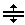

Qt¶
Detailed Description¶
The Qt namespace contains miscellaneous identifiers used throughout the Qt library.
-
PySide2.QtCore.Qt.GlobalColor¶ Qt’s predefined
PySide2.QtGui.QColorobjects:Constant Description Qt.white White (#ffffff) Qt.black Black (#000000) Qt.red Red (#ff0000) Qt.darkRed Dark red (#800000) Qt.green Green (#00ff00) Qt.darkGreen Dark green (#008000) Qt.blue Blue (#0000ff) Qt.darkBlue Dark blue (#000080) Qt.cyan Cyan (#00ffff) Qt.darkCyan Dark cyan (#008080) Qt.magenta Magenta (#ff00ff) Qt.darkMagenta Dark magenta (#800080) Qt.yellow Yellow (#ffff00) Qt.darkYellow Dark yellow (#808000) Qt.gray Gray (#a0a0a4) Qt.darkGray Dark gray (#808080) Qt.lightGray Light gray (#c0c0c0) Qt.transparent a transparent black value (i.e., PySide2.QtGui.QColor(0, 0, 0, 0))Qt.color0 0 pixel value (for bitmaps) Qt.color1 1 pixel value (for bitmaps) See also
-
PySide2.QtCore.Qt.KeyboardModifier¶ This enum describes the modifier keys.
Constant Description Qt.NoModifier No modifier key is pressed. Qt.ShiftModifier A Shift key on the keyboard is pressed. Qt.ControlModifier A Ctrl key on the keyboard is pressed. Qt.AltModifier An Alt key on the keyboard is pressed. Qt.MetaModifier A Meta key on the keyboard is pressed. Qt.KeypadModifier A keypad button is pressed. Qt.GroupSwitchModifier X11 only. A Mode_switch key on the keyboard is pressed. Note
On macOS , the
ControlModifiervalue corresponds to the Command keys on the keyboard, and theMetaModifiervalue corresponds to the Control keys. TheKeypadModifiervalue will also be set when an arrow key is pressed as the arrow keys are considered part of the keypad.Note
On Windows Keyboards, and
Qt.Key_Metaare mapped to the Windows key.See also
Qt.MouseButtonQt.Modifier
-
PySide2.QtCore.Qt.Modifier¶ This enum provides shorter names for the keyboard modifier keys supported by Qt.
Note
On macOS , the
CTRLvalue corresponds to the Command keys on the keyboard, and theMETAvalue corresponds to the Control keys.Constant Description Qt.SHIFT The Shift keys provided on all standard keyboards. Qt.META The Meta keys. Qt.CTRL The Ctrl keys. Qt.ALT The normal Alt keys, but not keys like AltGr. Qt.UNICODE_ACCEL The shortcut is specified as a Unicode code point, not as a Qt Key. See also
Qt.KeyboardModifierQt.MouseButton
-
PySide2.QtCore.Qt.MouseButton¶ This enum type describes the different mouse buttons.
Constant Description Qt.NoButton The button state does not refer to any button (see QMouseEvent.button()).Qt.AllButtons This value corresponds to a mask of all possible mouse buttons. Use to set the ‘acceptedButtons’ property of a MouseArea to accept ALL mouse buttons. Qt.LeftButton The left button is pressed, or an event refers to the left button. (The left button may be the right button on left-handed mice.) Qt.RightButton The right button. Qt.MidButton The middle button. Qt.MiddleButton The middle button. Qt.BackButton The ‘Back’ button. (Typically present on the ‘thumb’ side of a mouse with extra buttons. This is NOT the tilt wheel.) Qt.XButton1 The ‘Back’ Button. Qt.ExtraButton1 The ‘Back’ Button. Qt.ForwardButton The ‘Forward’ Button. (Typically present beside the ‘Back’ button, and also pressed by the thumb.) Qt.XButton2 The ‘Forward Button. Qt.ExtraButton2 The ‘Forward’ Button. Qt.TaskButton The ‘Task’ Button. Qt.ExtraButton3 The ‘Task’ Button. Qt.ExtraButton4 The 7th non-wheel Mouse Button. Qt.ExtraButton5 The 8th non-wheel Mouse Button. Qt.ExtraButton6 The 9th non-wheel Mouse Button. Qt.ExtraButton7 The 10th non-wheel Mouse Button. Qt.ExtraButton8 The 11th non-wheel Mouse Button. Qt.ExtraButton9 The 12th non-wheel Mouse Button. Qt.ExtraButton10 The 13th non-wheel Mouse Button. Qt.ExtraButton11 The 14th non-wheel Mouse Button. Qt.ExtraButton12 The 15th non-wheel Mouse Button. Qt.ExtraButton13 The 16th non-wheel Mouse Button. Qt.ExtraButton14 The 17th non-wheel Mouse Button. Qt.ExtraButton15 The 18th non-wheel Mouse Button. Qt.ExtraButton16 The 19th non-wheel Mouse Button. Qt.ExtraButton17 The 20th non-wheel Mouse Button. Qt.ExtraButton18 The 21st non-wheel Mouse Button. Qt.ExtraButton19 The 22nd non-wheel Mouse Button. Qt.ExtraButton20 The 23rd non-wheel Mouse Button. Qt.ExtraButton21 The 24th non-wheel Mouse Button. Qt.ExtraButton22 The 25th non-wheel Mouse Button. Qt.ExtraButton23 The 26th non-wheel Mouse Button. Qt.ExtraButton24 The 27th non-wheel Mouse Button. Note
Some models of multi-button mice are pre-configured with high-numbered Buttons emulating keyboard sequences, for use in specific games. In order for these Buttons to be seen as actual ‘Mouse Buttons’, the device must be re-configured (using the vendor’s configuration tool).
See also
Qt.KeyboardModifierQt.Modifier
-
PySide2.QtCore.Qt.Orientation¶ This type is used to signify an object’s orientation.
Constant Description Qt.Horizontal Qt.Vertical Orientation is used with
PySide2.QtWidgets.QScrollBarfor example.
-
PySide2.QtCore.Qt.FocusPolicy¶ This enum type defines the various policies a widget can have with respect to acquiring keyboard focus.
Constant Description Qt.TabFocus the widget accepts focus by tabbing. Qt.ClickFocus the widget accepts focus by clicking. Qt.StrongFocus the widget accepts focus by both tabbing and clicking. On macOS this will also be indicate that the widget accepts tab focus when in ‘Text/List focus mode’. Qt.WheelFocus like plus the widget accepts focus by using the mouse wheel. Qt.NoFocus the widget does not accept focus.
-
PySide2.QtCore.Qt.TabFocusBehavior¶ This enum type provides different focus behaviors for tab navigation.
Constant Description Qt.NoTabFocus iterate nothing. Qt.TabFocusTextControls iterate text controls and widgets. Qt.TabFocusListControls iterate list controls and widgets. Qt.TabFocusAllControls iterate all controls and widgets.
Note
This enum was introduced in Qt 5.5.
-
PySide2.QtCore.Qt.SortOrder¶ This enum describes how the items in a widget are sorted.
Constant Description Qt.AscendingOrder The items are sorted ascending e.g. starts with ‘AAA’ ends with ‘ZZZ’ in Latin-1 locales Qt.DescendingOrder The items are sorted descending e.g. starts with ‘ZZZ’ ends with ‘AAA’ in Latin-1 locales
-
PySide2.QtCore.Qt.TileRule¶ This enum describes how to repeat or stretch the parts of an image when drawing.
Constant Description Qt.StretchTile Scale the image to fit to the available area. Qt.RepeatTile Repeat the image until there is no more space. May crop the last image. Qt.RoundTile Similar to Repeat, but scales the image down to ensure that the last tile is not cropped.
Note
This enum was introduced in Qt 4.6.
-
PySide2.QtCore.Qt.AlignmentFlag¶ This enum type is used to describe alignment. It contains horizontal and vertical flags that can be combined to produce the required effect.
The
Qt.TextElideModeenum can also be used in many situations to fine-tune the appearance of aligned text.The horizontal flags are:
Constant Description Qt.AlignLeft Aligns with the left edge. Qt.AlignRight Aligns with the right edge. Qt.AlignHCenter Centers horizontally in the available space. Qt.AlignJustify Justifies the text in the available space. The vertical flags are:
Constant Description Qt.AlignTop Aligns with the top. Qt.AlignBottom Aligns with the bottom. Qt.AlignVCenter Centers vertically in the available space. Qt.AlignBaseline Aligns with the baseline. You can use only one of the horizontal flags at a time. There is one two-dimensional flag:
Constant Description Qt.AlignCenter Centers in both dimensions. You can use at most one horizontal and one vertical flag at a time. counts as both horizontal and vertical.
Three enum values are useful in applications that can be run in right-to-left mode:
Constant Description Qt.AlignAbsolute If the widget’s layout direction is Qt.RightToLeft(instead ofQt.LeftToRight, the default), refers to the right edge and to the left edge. This is normally the desired behavior. If you want to always mean “left” and to always mean “right”, combine the flag with .Qt.AlignLeading Synonym for . Qt.AlignTrailing Synonym for . Masks:
Constant Description Qt.AlignHorizontal_Mask Qt.AlignVertical_Mask Conflicting combinations of flags have undefined meanings.
-
PySide2.QtCore.Qt.TextFlag¶ This enum type is used to define some modifier flags. Some of these flags only make sense in the context of printing:
Constant Description Qt.TextSingleLine Treats all whitespace as spaces and prints just one line. Qt.TextDontClip If it’s impossible to stay within the given bounds, it prints outside. Qt.TextExpandTabs Makes the U+0009 (ASCII tab) character move to the next tab stop. Qt.TextShowMnemonic Displays the string “&P” as P For an ampersand, use “&&”. Qt.TextWordWrap Breaks lines at appropriate points, e.g. at word boundaries. Qt.TextWrapAnywhere Breaks lines anywhere, even within words. Qt.TextHideMnemonic Same as but doesn’t draw the underlines. Qt.TextDontPrint Treat this text as “hidden” and don’t print it. Qt.TextIncludeTrailingSpaces When this option is set, QTextLine.naturalTextWidth()andQTextLine.naturalTextRect()will return a value that includes the width of trailing spaces in the text; otherwise this width is excluded.Qt.TextJustificationForced Ensures that text lines are justified. You can use as many modifier flags as you want, except that and cannot be combined.
Flags that are inappropriate for a given use are generally ignored.
-
PySide2.QtCore.Qt.TextElideMode¶ This enum specifies where the ellipsis should appear when displaying texts that don’t fit:
Constant Description Qt.ElideLeft The ellipsis should appear at the beginning of the text. Qt.ElideRight The ellipsis should appear at the end of the text. Qt.ElideMiddle The ellipsis should appear in the middle of the text. Qt.ElideNone Ellipsis should NOT appear in the text. is normally the most appropriate choice for URLs (e.g., “http://bugreports.qt…/QTWEBSITE-13/”), whereas is appropriate for other strings (e.g., “Deploying Applications on Ma…”).
See also
QAbstractItemView.textElideModeQFontMetrics.elidedText()Qt.AlignmentFlagQTabBar.elideMode
-
PySide2.QtCore.Qt.WhiteSpaceMode¶ This enum describes the types of whitespace mode that are used by the
PySide2.QtGui.QTextDocumentclass to meet the requirements of different kinds of textual information.Constant Description Qt.WhiteSpaceNormal The whitespace mode used to display normal word wrapped text in paragraphs. Qt.WhiteSpacePre A preformatted text mode in which whitespace is reproduced exactly. Qt.WhiteSpaceNoWrap
-
PySide2.QtCore.Qt.HitTestAccuracy¶ This enum contains the types of accuracy that can be used by the
PySide2.QtGui.QTextDocumentclass when testing for mouse clicks on text documents.Constant Description Qt.ExactHit The point at which input occurred must coincide exactly with input-sensitive parts of the document. Qt.FuzzyHit The point at which input occurred can lie close to input-sensitive parts of the document.
-
PySide2.QtCore.Qt.WindowType¶ This enum type is used to specify various window-system properties for the widget. They are fairly unusual but necessary in a few cases. Some of these flags depend on whether the underlying window manager supports them.
The main types are
Constant Description Qt.Widget This is the default type for PySide2.QtWidgets.QWidget. Widgets of this type are child widgets if they have a parent, and independent windows if they have no parent. See also and .Qt.Window Indicates that the widget is a window, usually with a window system frame and a title bar, irrespective of whether the widget has a parent or not. Note that it is not possible to unset this flag if the widget does not have a parent. Qt.Dialog Indicates that the widget is a window that should be decorated as a dialog (i.e., typically no maximize or minimize buttons in the title bar). This is the default type for PySide2.QtWidgets.QDialog. If you want to use it as a modal dialog, it should be launched from another window, or have a parent and used with theQWidget.windowModalityproperty. If you make it modal, the dialog will prevent other top-level windows in the application from getting any input. We refer to a top-level window that has a parent as a secondary window.Qt.Sheet Indicates that the window is a sheet on macOS . Since using a sheet implies window modality, the recommended way is to use QWidget.setWindowModality(), orQDialog.open(), instead.Qt.Drawer Indicates that the widget is a drawer on macOS . Qt.Popup Indicates that the widget is a pop-up top-level window, i.e. that it is modal, but has a window system frame appropriate for pop-up menus. Qt.Tool Indicates that the widget is a tool window. A tool window is often a small window with a smaller than usual title bar and decoration, typically used for collections of tool buttons. If there is a parent, the tool window will always be kept on top of it. If there isn’t a parent, you may consider using as well. If the window system supports it, a tool window can be decorated with a somewhat lighter frame. It can also be combined with . On macOS , tool windows correspond to the NSPanel class of windows. This means that the window lives on a level above normal windows making it impossible to put a normal window on top of it. By default, tool windows will disappear when the application is inactive. This can be controlled by the Qt.WA_MacAlwaysShowToolWindowattribute.Qt.ToolTip Indicates that the widget is a tooltip. This is used internally to implement tooltips.Qt.SplashScreen Indicates that the window is a splash screen. This is the default type for PySide2.QtWidgets.QSplashScreen.Qt.Desktop Indicates that this widget is the desktop. This is the type for PySide2.QtWidgets.QDesktopWidget.Qt.SubWindow Indicates that this widget is a sub-window, such as a PySide2.QtWidgets.QMdiSubWindowwidget.Qt.ForeignWindow Indicates that this window object is a handle representing a native platform window created by another process or by manually using native code. Qt.CoverWindow Indicates that the window represents a cover window, which is shown when the application is minimized on some platforms. There are also a number of flags which you can use to customize the appearance of top-level windows. These have no effect on other windows:
Constant Description Qt.MSWindowsFixedSizeDialogHint Gives the window a thin dialog border on Windows. This style is traditionally used for fixed-size dialogs. Qt.MSWindowsOwnDC Gives the window its own display context on Windows. Qt.BypassWindowManagerHint This flag can be used to indicate to the platform plugin that “all” window manager protocols should be disabled. This flag will behave different depending on what operating system the application is running on and what window manager is running. The flag can be used to get a native window with no configuration set. Qt.X11BypassWindowManagerHint Bypass the window manager completely. This results in a borderless window that is not managed at all (i.e., no keyboard input unless you call QWidget.activateWindow()manually).Qt.FramelessWindowHint Produces a borderless window. The user cannot move or resize a borderless window via the window system. On X11, the result of the flag is dependent on the window manager and its ability to understand Motif and/or NETWM hints. Most existing modern window managers can handle this. Qt.NoDropShadowWindowHint Disables window drop shadow on supporting platforms. The
CustomizeWindowHintflag is used to enable customization of the window controls. This flag must be set to allow theWindowTitleHint,WindowSystemMenuHint,WindowMinimizeButtonHint,WindowMaximizeButtonHintandWindowCloseButtonHintflags to be changed.Constant Description Qt.CustomizeWindowHint Turns off the default window title hints. Qt.WindowTitleHint Gives the window a title bar. Qt.WindowSystemMenuHint Adds a window system menu, and possibly a close button (for example on Mac). If you need to hide or show a close button, it is more portable to use WindowCloseButtonHint.Qt.WindowMinimizeButtonHint Adds a minimize button. On some platforms this implies for it to work. Qt.WindowMaximizeButtonHint Adds a maximize button. On some platforms this implies for it to work. Qt.WindowMinMaxButtonsHint Adds a minimize and a maximize button. On some platforms this implies for it to work. Qt.WindowCloseButtonHint Adds a close button. On some platforms this implies for it to work. Qt.WindowContextHelpButtonHint Adds a context help button to dialogs. On some platforms this implies for it to work. Qt.MacWindowToolBarButtonHint On macOS adds a tool bar button (i.e., the oblong button that is on the top right of windows that have toolbars). Qt.WindowFullscreenButtonHint On macOS adds a fullscreen button. Qt.BypassGraphicsProxyWidget Prevents the window and its children from automatically embedding themselves into a PySide2.QtWidgets.QGraphicsProxyWidgetif the parent widget is already embedded. You can set this flag if you want your widget to always be a toplevel widget on the desktop, regardless of whether the parent widget is embedded in a scene or not.Qt.WindowShadeButtonHint Adds a shade button in place of the minimize button if the underlying window manager supports it. Qt.WindowStaysOnTopHint Informs the window system that the window should stay on top of all other windows. Note that on some window managers on X11 you also have to pass for this flag to work correctly. Qt.WindowStaysOnBottomHint Informs the window system that the window should stay on bottom of all other windows. Note that on X11 this hint will work only in window managers that support _NET_WM_STATE_BELOW atom. If a window always on the bottom has a parent, the parent will also be left on the bottom. This window hint is currently not implemented for macOS . Qt.WindowTransparentForInput Informs the window system that this window is used only for output (displaying something) and does not take input. Therefore input events should pass through as if it wasn’t there. Qt.WindowOverridesSystemGestures Informs the window system that this window implements its own set of gestures and that system level gestures, like for instance three-finger desktop switching, should be disabled. Qt.WindowDoesNotAcceptFocus Informs the window system that this window should not receive the input focus. Qt.MaximizeUsingFullscreenGeometryHint Informs the window system that when maximizing the window it should use as much of the available screen geometry as possible, including areas that may be covered by system UI such as status bars or application launchers. This may result in the window being placed under these system UIs, but does not guarantee it, depending on whether or not the platform supports it. When the flag is enabled the user is responsible for taking QScreen.availableGeometry()into account, so that any UI elements in the application that require user interaction are not covered by system UI.Qt.WindowType_Mask A mask for extracting the window type part of the window flags. See also
QWidget.windowFlagsWindow Flags Example
-
PySide2.QtCore.Qt.WindowState¶ This enum type is used to specify the current state of a top-level window.
The states are
Constant Description Qt.WindowNoState The window has no state set (in normal state). Qt.WindowMinimized The window is minimized (i.e. iconified). Qt.WindowMaximized The window is maximized with a frame around it. Qt.WindowFullScreen The window fills the entire screen without any frame around it. Qt.WindowActive The window is the active window, i.e. it has keyboard focus.
-
PySide2.QtCore.Qt.ApplicationState¶ This enum type is used to specify the current state of the application.
The states are
Constant Description Qt.ApplicationSuspended The application is about to suspend. When entering this state, the application should save its state, cease all activities, and be prepared for code execution to stop. While suspended, the application can be killed at any time without further warnings (e.g. when low memory forces the OS to purge suspended applications). Qt.ApplicationHidden The application is hidden and runs in the background. This is the normal state for applications that need to do background processing, like playing music, while the user interacts with other applications. The application should free up all graphical resources when entering this state. Qt.ApplicationInactive The application is visible, but not selected to be in front. On desktop platforms, this typically means that the user activated another application. On mobile platforms, it is more common to enter this state when the OS is interrupting the user with e.g. incoming calls or SMS-messages. While in this state, consider reducing CPU-intensive tasks. Qt.ApplicationActive The application is visible and selected to be in front.
Note
This enum was introduced in Qt 5.1.
-
PySide2.QtCore.Qt.ScreenOrientation¶ This enum type specifies the various orientations a screen might have.
Constant Description Qt.PrimaryOrientation The display’s primary orientation. Qt.LandscapeOrientation Landscape orientation, display width is greater than display height. Qt.PortraitOrientation Portrait orientation, display height is greater than display width, rotated 90 degree clockwise relative to landscape. Qt.InvertedLandscapeOrientation Inverted landscape orientation, rotated 180 degrees relative to landscape. Qt.InvertedPortraitOrientation Inverted portrait orientation, rotated 180 degrees relative to portrait.
Note
This enum was introduced in Qt 5.0.
-
PySide2.QtCore.Qt.WidgetAttribute¶ This enum type is used to specify various widget attributes. Attributes are set and cleared with
QWidget.setAttribute(), and queried withQWidget.testAttribute(), although some have special convenience functions which are mentioned below.Constant Description Qt.WA_AcceptDrops Allows data from drag and drop operations to be dropped onto the widget (see QWidget.setAcceptDrops()).Qt.WA_AlwaysShowToolTips Enables tooltips for inactive windows. Qt.WA_ContentsPropagated This flag is superfluous and obsolete; it no longer has any effect. Since Qt 4.1, all widgets that do not set propagate their contents. Qt.WA_CustomWhatsThis Indicates that the widget wants to continue operating normally in “What’s This?” mode. This is set by the widget’s author. Qt.WA_DeleteOnClose Makes Qt delete this widget when the widget has accepted the close event (see QWidget.closeEvent()).Qt.WA_Disabled Indicates that the widget is disabled, i.e. it does not receive any mouse or keyboard events. There is also a getter functions QWidget.isEnabled(). This is set/cleared by the Qt kernel.Qt.WA_DontShowOnScreen Indicates that the widget is hidden or is not a part of the viewable Desktop. Qt.WA_ForceDisabled Indicates that the widget is explicitly disabled, i.e. it will remain disabled even when all its ancestors are set to the enabled state. This implies . This is set/cleared by QWidget.setEnabled()andQWidget.setDisabled().Qt.WA_ForceUpdatesDisabled Indicates that updates are explicitly disabled for the widget; i.e. it will remain disabled even when all its ancestors are set to the updates-enabled state. This implies . This is set/cleared by QWidget.setUpdatesEnabled().Qt.WA_GroupLeader This attribute has been deprecated. Use QWidget.windowModalityinstead.Qt.WA_Hover Forces Qt to generate paint events when the mouse enters or leaves the widget. This feature is typically used when implementing custom styles; see the Styles example for details. Qt.WA_InputMethodEnabled Enables input methods for Asian languages. Must be set when creating custom text editing widgets. Qt.WA_KeyboardFocusChange Set on a toplevel window when the users changes focus with the keyboard (tab, backtab, or shortcut). Qt.WA_KeyCompression Enables key event compression if set, and disables it if not set. By default key compression is off, so widgets receive one key press event for each key press (or more, since autorepeat is usually on). If you turn it on and your program doesn’t keep up with key input, Qt may try to compress key events so that more than one character can be processed in each event. For example, a word processor widget might receive 2, 3 or more characters in each QKeyEvent.text(), if the layout recalculation takes too long for the CPU. If a widget supports multiple character unicode input, it is always safe to turn the compression on. Qt performs key event compression only for printable characters.Qt.Modifierkeys, cursor movement keys, function keys and miscellaneous action keys (e.g. Escape, Enter, Backspace, PrintScreen) will stop key event compression, even if there are more compressible key events available. Platforms other than Mac and X11 do not support this compression, in which case turning it on will have no effect. This is set/cleared by the widget’s author.Qt.WA_LayoutOnEntireRect Indicates that the widget wants PySide2.QtWidgets.QLayoutto operate on the entireQWidget.rect(), not only onQWidget.contentsRect(). This is set by the widget’s author.Qt.WA_LayoutUsesWidgetRect Ignore the layout item rect from the style when laying out this widget with PySide2.QtWidgets.QLayout.Qt.WA_MacNoClickThrough This value is obsolete and has no effect. Qt.WA_MacOpaqueSizeGrip Indicates that the native Carbon size grip should be opaque instead of transparent (the default). This attribute is only applicable to macOS and is set by the widget’s author. Qt.WA_MacShowFocusRect Indicates that this widget should get a PySide2.QtWidgets.QFocusFramearound it. Some widgets draw their own focus halo regardless of this attribute. Not that theQWidget.focusPolicyalso plays the main role in whether something is given focus or not, this only controls whether or not this gets the focus frame. This attribute is only applicable to macOS .Qt.WA_MacNormalSize Indicates the widget should have the normal size for widgets in macOS . This attribute is only applicable to macOS . Qt.WA_MacSmallSize Indicates the widget should have the small size for widgets in macOS . This attribute is only applicable to macOS . Qt.WA_MacMiniSize Indicates the widget should have the mini size for widgets in macOS . This attribute is only applicable to macOS . Qt.WA_MacVariableSize Indicates the widget can choose between alternative sizes for widgets to avoid clipping. This attribute is only applicable to macOS . Qt.WA_MacBrushedMetal This value is obsolete and has no effect. Qt.WA_Mapped Indicates that the widget is mapped on screen. This is set/cleared by the Qt kernel. Qt.WA_MouseNoMask Makes the widget receive mouse events for the entire widget regardless of the currently set mask, overriding QWidget.setMask(). This is not applicable for top-level windows.Qt.WA_MouseTracking Indicates that the widget has mouse tracking enabled. See QWidget.mouseTracking.Qt.WA_Moved Indicates that the widget has an explicit position. This is set/cleared by QWidget.move()and byQWidget.setGeometry().Qt.WA_MSWindowsUseDirect3D This value is obsolete and has no effect. Qt.WA_NoBackground This value is obsolete. Use instead. Qt.WA_NoChildEventsForParent Indicates that the widget does not want ChildAdded or ChildRemoved events sent to its parent. This is rarely necessary but can help to avoid automatic insertion widgets like splitters and layouts. This is set by a widget’s author. Qt.WA_NoChildEventsFromChildren Indicates that the widget does not want to receive ChildAdded or ChildRemoved events sent from its children. This is set by a widget’s author. Qt.WA_NoMouseReplay Used for pop-up widgets. Indicates that the most recent mouse press event should not be replayed when the pop-up widget closes. The flag is set by the widget’s author and cleared by the Qt kernel every time the widget receives a new mouse event. Qt.WA_NoMousePropagation Prohibits mouse events from being propagated to the widget’s parent. This attribute is disabled by default. Qt.WA_TransparentForMouseEvents When enabled, this attribute disables the delivery of mouse events to the widget and its children. Mouse events are delivered to other widgets as if the widget and its children were not present in the widget hierarchy; mouse clicks and other events effectively “pass through” them. This attribute is disabled by default. Qt.WA_NoSystemBackground Indicates that the widget has no background, i.e. when the widget receives paint events, the background is not automatically repainted. Note: Unlike , newly exposed areas are never filled with the background (e.g., after showing a window for the first time the user can see “through” it until the application processes the paint events). This flag is set or cleared by the widget’s author. Qt.WA_OpaquePaintEvent Indicates that the widget paints all its pixels when it receives a paint event. Thus, it is not required for operations like updating, resizing, scrolling and focus changes to erase the widget before generating paint events. The use of provides a small optimization by helping to reduce flicker on systems that do not support double buffering and avoiding computational cycles necessary to erase the background prior to painting. Note: Unlike , makes an effort to avoid transparent window backgrounds. This flag is set or cleared by the widget’s author. Qt.WA_OutsideWSRange Indicates that the widget is outside the valid range of the window system’s coordinate system. A widget outside the valid range cannot be mapped on screen. This is set/cleared by the Qt kernel. Qt.WA_PaintOnScreen Indicates that the widget wants to draw directly onto the screen. Widgets with this attribute set do not participate in composition management, i.e. they cannot be semi-transparent or shine through semi-transparent overlapping widgets. Note: This flag is only supported on X11 and it disables double buffering. On Qt for Embedded Linux, the flag only works when set on a top-level widget and it relies on support from the active screen driver. This flag is set or cleared by the widget’s author. To render outside of Qt’s paint system, e.g., if you require native painting primitives, you need to reimplement QWidget.paintEngine()to return 0 and set this flag.Qt.WA_PaintUnclipped Makes all painters operating on this widget unclipped. Children of this widget or other widgets in front of it do not clip the area the painter can paint on. This flag is only supported for widgets with the flag set. The preferred way to do this in a cross platform way is to create a transparent widget that lies in front of the other widgets. Qt.WA_PendingMoveEvent Indicates that a move event is pending, e.g., when a hidden widget was moved. This flag is set or cleared by the Qt kernel. Qt.WA_PendingResizeEvent Indicates that a resize event is pending, e.g., when a hidden widget was resized. This flag is set or cleared by the Qt kernel. Qt.WA_QuitOnClose Makes Qt quit the application when the last widget with the attribute set has accepted closeEvent(). This behavior can be modified with the QApplication.quitOnLastWindowClosedproperty. By default this attribute is set for all widgets of typeQt.Window.Qt.WA_Resized Indicates that the widget has an explicit size. This flag is set or cleared by QWidget.resize()andQWidget.setGeometry().Qt.WA_RightToLeft Indicates that the layout direction for the widget is right to left. Qt.WA_SetCursor Indicates that the widget has a cursor of its own. This flag is set or cleared by QWidget.setCursor()andQWidget.unsetCursor().Qt.WA_SetFont Indicates that the widget has a font of its own. This flag is set or cleared by QWidget.setFont().Qt.WA_SetPalette Indicates that the widget has a palette of its own. This flag is set or cleared by QWidget.setPalette().Qt.WA_SetStyle Indicates that the widget has a style of its own. This flag is set or cleared by QWidget.setStyle().Qt.WA_ShowModal This attribute has been deprecated. Use QWidget.windowModalityinstead.Qt.WA_StaticContents Indicates that the widget contents are north-west aligned and static. On resize, such a widget will receive paint events only for parts of itself that are newly visible. This flag is set or cleared by the widget’s author. Qt.WA_StyleSheet Indicates that the widget is styled using a style sheet . Qt.WA_TabletTracking Indicates that the widget has tablet tracking enabled. See QWidget.tabletTracking.Qt.WA_TranslucentBackground Indicates that the widget should have a translucent background, i.e., any non-opaque regions of the widgets will be translucent because the widget will have an alpha channel. Setting this flag causes to be set. On Windows the widget also needs the Qt.FramelessWindowHintwindow flag to be set. This flag is set or cleared by the widget’s author.Qt.WA_UnderMouse Indicates that the widget is under the mouse cursor. The value is not updated correctly during drag and drop operations. There is also a getter function, QWidget.underMouse(). This flag is set or cleared by the Qt kernel.Qt.WA_UpdatesDisabled Indicates that updates are blocked (including the system background). This flag is set or cleared by the Qt kernel. Warning: This flag must never be set or cleared by the widget’s author. Qt.WA_WindowModified Indicates that the window is marked as modified. On some platforms this flag will do nothing, on others (including macOS and Windows) the window will take a modified appearance. This flag is set or cleared by QWidget.setWindowModified().Qt.WA_WindowPropagation Makes a toplevel window inherit font, palette and locale from its parent. Qt.WA_MacAlwaysShowToolWindow On macOS , show the tool window even when the application is not active. By default, all tool windows are hidden when the application is inactive. Qt.WA_SetLocale Indicates the locale should be taken into consideration in the widget. Qt.WA_StyledBackground Indicates the widget should be drawn using a styled background. Qt.WA_ShowWithoutActivating Show the widget without making it active. Qt.WA_NativeWindow Indicates that a native window is created for the widget. Enabling this flag will also force a native window for the widget’s ancestors unless is set. Qt.WA_DontCreateNativeAncestors Indicates that the widget’s ancestors are kept non-native even though the widget itself is native. Qt.WA_X11NetWmWindowTypeDesktop Adds _NET_WM_WINDOW_TYPE_DESKTOP to the window’s _NET_WM_WINDOW_TYPE X11 window property. See http://standards.freedesktop.org/wm-spec/ for more details. This attribute has no effect on non-X11 platforms. Qt.WA_X11NetWmWindowTypeDock Adds _NET_WM_WINDOW_TYPE_DOCK to the window’s _NET_WM_WINDOW_TYPE X11 window property. See http://standards.freedesktop.org/wm-spec/ for more details. This attribute has no effect on non-X11 platforms. Qt.WA_X11NetWmWindowTypeToolBar Adds _NET_WM_WINDOW_TYPE_TOOLBAR to the window’s _NET_WM_WINDOW_TYPE X11 window property. See http://standards.freedesktop.org/wm-spec/ for more details. This attribute has no effect on non-X11 platforms. Note: Qt automatically sets this attribute for PySide2.QtWidgets.QToolBar.Qt.WA_X11NetWmWindowTypeMenu Adds _NET_WM_WINDOW_TYPE_MENU to the window’s _NET_WM_WINDOW_TYPE X11 window property. See http://standards.freedesktop.org/wm-spec/ for more details. This attribute has no effect on non-X11 platforms. Note: Qt automatically sets this attribute for PySide2.QtWidgets.QMenuwhen torn-off.Qt.WA_X11NetWmWindowTypeUtility Adds _NET_WM_WINDOW_TYPE_UTILITY to the window’s _NET_WM_WINDOW_TYPE X11 window property. See http://standards.freedesktop.org/wm-spec/ for more details. This attribute has no effect on non-X11 platforms. Note: Qt automatically sets this attribute for the Qt.Toolwindow type.Qt.WA_X11NetWmWindowTypeSplash Adds _NET_WM_WINDOW_TYPE_SPLASH to the window’s _NET_WM_WINDOW_TYPE X11 window property. See http://standards.freedesktop.org/wm-spec/ for more details. This attribute has no effect on non-X11 platforms. Note: Qt automatically sets this attribute for the Qt.SplashScreenwindow type.Qt.WA_X11NetWmWindowTypeDialog Adds _NET_WM_WINDOW_TYPE_DIALOG to the window’s _NET_WM_WINDOW_TYPE X11 window property. See http://standards.freedesktop.org/wm-spec/ for more details. This attribute has no effect on non-X11 platforms. Note: Qt automatically sets this attribute for the Qt.DialogandQt.Sheetwindow types.Qt.WA_X11NetWmWindowTypeDropDownMenu Adds _NET_WM_WINDOW_TYPE_DROPDOWN_MENU to the window’s _NET_WM_WINDOW_TYPE X11 window property. See http://standards.freedesktop.org/wm-spec/ for more details. This attribute has no effect on non-X11 platforms. Note: Qt automatically sets this attribute for PySide2.QtWidgets.QMenuobjects added to aPySide2.QtWidgets.QMenuBar.Qt.WA_X11NetWmWindowTypePopupMenu Adds _NET_WM_WINDOW_TYPE_POPUP_MENU to the window’s _NET_WM_WINDOW_TYPE X11 window property. See http://standards.freedesktop.org/wm-spec/ for more details. This attribute has no effect on non-X11 platforms. Note: Qt automatically sets this attribute for PySide2.QtWidgets.QMenu.Qt.WA_X11NetWmWindowTypeToolTip Adds _NET_WM_WINDOW_TYPE_TOOLTIP to the window’s _NET_WM_WINDOW_TYPE X11 window property. See http://standards.freedesktop.org/wm-spec/ for more details. This attribute has no effect on non-X11 platforms. Note: Qt automatically sets this attribute for the Qt.ToolTipwindow type.Qt.WA_X11NetWmWindowTypeNotification Adds _NET_WM_WINDOW_TYPE_NOTIFICATION to the window’s _NET_WM_WINDOW_TYPE X11 window property. See http://standards.freedesktop.org/wm-spec/ for more details. This attribute has no effect on non-X11 platforms. Qt.WA_X11NetWmWindowTypeCombo Adds _NET_WM_WINDOW_TYPE_COMBO to the window’s _NET_WM_WINDOW_TYPE X11 window property. See http://standards.freedesktop.org/wm-spec/ for more details. This attribute has no effect on non-X11 platforms. Note: Qt automatically sets this attribute for the PySide2.QtWidgets.QComboBoxpop-up.Qt.WA_X11NetWmWindowTypeDND Adds _NET_WM_WINDOW_TYPE_DND to the window’s _NET_WM_WINDOW_TYPE X11 window property. See http://standards.freedesktop.org/wm-spec/ for more details. This attribute has no effect on non-X11 platforms. Note: Qt automatically sets this attribute on the feedback widget used during a drag. Qt.WA_MacFrameworkScaled This value is obsolete and has no effect. Qt.WA_AcceptTouchEvents Allows touch events (see PySide2.QtGui.QTouchEvent) to be sent to the widget. Must be set on all widgets that can handle touch events. Without this attribute set, events from a touch device will be sent as mouse events.Qt.WA_TouchPadAcceptSingleTouchEvents Allows touchpad single touch events to be sent to the widget. Qt.WA_X11DoNotAcceptFocus Asks the window manager to not give focus to this top level window. This attribute has no effect on non-X11 platforms. Qt.WA_AlwaysStackOnTop Since Qt 5.4, this value forces PySide2.QtWidgets.QOpenGLWidgetandPySide2.QtQuickWidgets.QQuickWidgetto be drawn last, on top of other widgets. Ignored for other type of widgets. Setting this attribute breaks the stacking order, but allows having a semi-transparent OpenGL widget with other widgets visible underneath. It is strongly recommended to call update() on the widget’s top-level window after enabling or disabling this attribute.Qt.WA_ContentsMarginsRespectsSafeArea A PySide2.QtWidgets.QWidgetrespects the safe area margins of a window by incorporating the margins into its contents’ margins by default. This means, that aPySide2.QtWidgets.QLayoutwill use the content area of a widget for its layout, unless the attribute is set. This along with a contents margin of 0 can be used on the actual layout, to allow for example a background image to underlay the status bar and other system areas on an iOS device, while still allowing child widgets of that background to be inset based on the safe area.
-
PySide2.QtCore.Qt.ApplicationAttribute¶ This enum describes attributes that change the behavior of application-wide features. These are enabled and disabled using
QCoreApplication.setAttribute(), and can be tested for withQCoreApplication.testAttribute().Constant Description Qt.AA_DontShowIconsInMenus Actions with the Icon property won’t be shown in any menus unless specifically set by the QAction.iconVisibleInMenuproperty. Menus that are currently open or menus already created in the native macOS menubar may not pick up a change in this attribute. Changes in theQAction.iconVisibleInMenuproperty will always be picked up.Qt.AA_DontShowShortcutsInContextMenus Actions with the Shortcut property won’t be shown in any shortcut menus unless specifically set by the QAction.shortcutVisibleInContextMenuproperty. This value has been added in Qt 5.10.Qt.AA_NativeWindows Ensures that widgets have native windows. Qt.AA_DontCreateNativeWidgetSiblings Ensures that siblings of native widgets stay non-native unless specifically set by the Qt.WA_NativeWindowattribute.Qt.AA_PluginApplication Indicates that Qt is used to author a plugin. Depending on the operating system, it suppresses specific initializations that do not necessarily make sense in the plugin case. For example on macOS , this includes avoiding loading our nib for the main menu and not taking possession of the native menu bar. Setting this attribute to true will also set the attribute to true. It also disables native event filters. This attribute has been added in Qt 5.7. It must be set before Q(Gui)Applicationis constructed.Qt.AA_DontUseNativeMenuBar All menubars created while this attribute is set to true won’t be used as a native menubar (e.g, the menubar at the top of the main screen on macOS ). Qt.AA_MacDontSwapCtrlAndMeta On macOS by default, Qt swaps the Control and Meta (Command) keys (i.e., whenever Control is pressed, Qt sends Meta, and whenever Meta is pressed Control is sent). When this attribute is true, Qt will not do the flip. QKeySequence.StandardKeywill also flip accordingly (i.e.,QKeySequence.Copywill be Command+C on the keyboard regardless of the value set, though what is output forQKeySequence.toString()will be different).Qt.AA_Use96Dpi Assume the screen has a resolution of 96 DPI rather than using the OS-provided resolution. This will cause font rendering to be consistent in pixels-per-point across devices rather than defining 1 point as 1/72 inch. Qt.AA_SynthesizeTouchForUnhandledMouseEvents All mouse events that are not accepted by the application will be translated to touch events instead. Qt.AA_SynthesizeMouseForUnhandledTouchEvents All touch events that are not accepted by the application will be translated to left button mouse events instead. This attribute is enabled by default. Qt.AA_UseHighDpiPixmaps Make QIcon.pixmap()generate high-dpi pixmaps that can be larger than the requested size. Such pixmaps will havePySide2.QtGui.QPixmap.devicePixelRatio()set to a value higher than 1. After setting this attribute, application code that uses pixmap sizes in layout geometry calculations should typically divide byPySide2.QtGui.QPixmap.devicePixelRatio()to get device-independent layout geometry.Qt.AA_ForceRasterWidgets Make top-level widgets use pure raster surfaces, and do not support non-native GL-based child widgets. Qt.AA_UseDesktopOpenGL Forces the usage of desktop OpenGL (for example, opengl32.dll or libGL.so) on platforms that use dynamic loading of the OpenGL implementation. This value has been added in Qt 5.3. This attribute must be set before Q(Gui)Applicationis constructed.Qt.AA_UseOpenGLES Forces the usage of OpenGL ES 2.0 or higher on platforms that use dynamic loading of the OpenGL implementation. This value has been added in Qt 5.3. This attribute must be set before Q(Gui)Applicationis constructed.Qt.AA_UseSoftwareOpenGL Forces the usage of a software based OpenGL implementation on platforms that use dynamic loading of the OpenGL implementation. This will typically be a patched build of Mesa llvmpipe, providing OpenGL 2.1. The value may have no effect if no such OpenGL implementation is available. The default name of this library is opengl32sw.dlland can be overridden by setting the environment variable QT_OPENGL_DLL. See the platform-specific pages, for instance Qt for Windows, for more information. This value has been added in Qt 5.4. This attribute must be set beforeQ(Gui)Applicationis constructed.Qt.AA_ShareOpenGLContexts Enables resource sharing between the OpenGL contexts used by classes like PySide2.QtWidgets.QOpenGLWidgetandPySide2.QtQuickWidgets.QQuickWidget. This allows sharing OpenGL resources, like textures, betweenPySide2.QtWidgets.QOpenGLWidgetinstances that belong to different top-level windows. This value has been added in Qt 5.4. This attribute must be set beforeQ(Gui)Applicationis constructed.Qt.AA_SetPalette Indicates whether a palette was explicitly set on the Q(Gui)Application. This value has been added in Qt 5.5.Qt.AA_EnableHighDpiScaling Enables high-DPI scaling in Qt on supported platforms (see also High DPI Displays). Supported platforms are X11, Windows and Android. Enabling makes Qt scale the main (device independent) coordinate system according to display scale factors provided by the operating system. This corresponds to setting the QT_AUTO_SCREEN_SCALE_FACTOR environment variable to 1. This value has been added in Qt 5.6. This attribute must be set before Q(Gui)Application is constructed. Qt.AA_DisableHighDpiScaling Disables high-DPI scaling in Qt, exposing window system coordinates. Note that the window system may do its own scaling, so this does not guarantee that QPaintDevice.devicePixelRatio()will be equal to 1. In addition, scale factors set by QT_SCALE_FACTOR will not be affected. This corresponds to setting the QT_AUTO_SCREEN_SCALE_FACTOR environment variable to 0. This value has been added in Qt 5.6. This attribute must be set before Q(Gui)Application is constructed.Qt.AA_UseStyleSheetPropagationInWidgetStyles By default, Qt Style Sheets disable regular PySide2.QtWidgets.QWidgetpalette and font propagation. When this flag is enabled, font and palette changes propagate as though the user had manually called the correspondingPySide2.QtWidgets.QWidgetmethods. See The Style Sheet Syntax - Inheritance for more details. This value has been added in Qt 5.7.Qt.AA_DontUseNativeDialogs All dialogs created while this attribute is set to true won’t use the native dialogs provided by the platform. This value has been added in Qt 5.7. Qt.AA_SynthesizeMouseForUnhandledTabletEvents All tablet events that are not accepted by the application will be translated to mouse events instead. This attribute is enabled by default. This value has been added in Qt 5.7. Qt.AA_CompressHighFrequencyEvents Enables compression of certain frequent events. On the X11 windowing system, the default value is true, which means that QEvent.MouseMove,QEvent.TouchUpdate, and changes in window size and position will be combined whenever they occur more frequently than the application handles them, so that they don’t accumulate and overwhelm the application later. On other platforms, the default is false. (In the future, the compression feature may be implemented across platforms.) You can test the attribute to see whether compression is enabled. If your application needs to handle all events with no compression, you can unset this attribute. Notice that input events from tablet devices will not be compressed. See if you want these to be compressed as well. This value has been added in Qt 5.7.Qt.AA_CompressTabletEvents Enables compression of input events from tablet devices. Notice that must be true for events compression to be enabled, and that this flag extends the former to tablet events. Its default value is false. This value has been added in Qt 5.10. Qt.AA_DontCheckOpenGLContextThreadAffinity When making a context current using PySide2.QtGui.QOpenGLContext, do not check that theQObject thread affinityof thePySide2.QtGui.QOpenGLContextobject is the same thread callingPySide2.QtGui.QOpenGLContext.makeCurrent(). This value has been added in Qt 5.8.Qt.AA_DisableShaderDiskCache Disables caching of shader program binaries on disk. By default Qt Quick, PySide2.QtGui.QPainter‘s OpenGL backend, and any application usingPySide2.QtGui.QOpenGLShaderProgramwith one of its addCacheableShaderFromSource overloads will employ a disk-basedprogram binary cachein either the shared or per-process cache storage location, on systems that support glProgramBinary(). In the unlikely event of this being problematic, set this attribute to disable all disk-based caching of shaders.Qt.AA_DisableWindowContextHelpButton Disables the WindowContextHelpButtonHintby default onQt.SheetandQt.Dialogwidgets. This hides the ? button on Windows, which only makes sense if you usePySide2.QtWidgets.QWhatsThisfunctionality. This value has been added in Qt 5.10. For Qt 6,WindowContextHelpButtonHintwill not be set by default.The following values are deprecated or obsolete:
Constant Description Qt.AA_ImmediateWidgetCreation This attribute is no longer fully supported in Qt 5. It ensures that widgets are created as soon as they are constructed. By default, resources for widgets are allocated on demand to improve efficiency and minimize resource usage. Setting or clearing this attribute affects widgets constructed after the change. Setting it tells Qt to create toplevel windows immediately. Therefore, if it is important to minimize resource consumption, do not set this attribute. Qt.AA_MacPluginApplication This attribute has been deprecated. Use instead. Qt.AA_MSWindowsUseDirect3DByDefault This value is obsolete and has no effect. Qt.AA_X11InitThreads This value is obsolete and has no effect.
-
PySide2.QtCore.Qt.ImageConversionFlag¶ The options marked “(default)” are set if no other values from the list are included (since the defaults are zero):
Color/Mono preference (ignored for
PySide2.QtGui.QBitmap):Constant Description Qt.AutoColor (default) - If the image has PySide2.QtGui.QImage.depth()1 and contains only black and white pixels, the pixmap becomes monochrome.Qt.ColorOnly The pixmap is dithered/converted to the native display depth.Qt.MonoOnly The pixmap becomes monochrome. If necessary, it is dithered using the chosen dithering algorithm. Dithering mode preference:
Constant Description Qt.DiffuseDither (default) - A high-quality dither using error diffusion. Qt.OrderedDither A faster, ordered dither. Qt.ThresholdDither No dithering; closest color is used. Dithering mode preference for 1-bit alpha masks:
Constant Description Qt.ThresholdAlphaDither (default) - No dithering. Qt.OrderedAlphaDither A faster, ordered dither. Qt.DiffuseAlphaDither A high-quality dither using error diffusion. Color matching versus dithering preference:
Constant Description Qt.PreferDither Always dither images when converting to smaller color-spaces. Qt.AvoidDither Only dither to indexed formats if the source image uses more different colors than the size of the color table of the destination format. Qt.AutoDither (default) - Only dither when down-converting to 1 or 8-bit indexed formats. Qt.NoOpaqueDetection Do not check whether the image contains non-opaque pixels. Use this if you know that the image is semi-transparent and you want to avoid the overhead of checking the pixels in the image until a non-opaque pixel is found, or if you want the pixmap to retain an alpha channel for some other reason. If the image has no alpha channel this flag has no effect. Qt.NoFormatConversion Don’t do any format conversions on the image. Can be useful when converting a PySide2.QtGui.QImageto aPySide2.QtGui.QPixmapfor a one-time rendering operation for example. Note that aPySide2.QtGui.QPixmapnot in the preferred format will be much slower as a paint device.
-
PySide2.QtCore.Qt.BGMode¶ Background mode:
Constant Description Qt.TransparentMode Qt.OpaqueMode
-
PySide2.QtCore.Qt.Key¶ The key names used by Qt.
Constant Description Qt.Key_Escape Qt.Key_Tab Qt.Key_Backtab Qt.Key_Backspace Qt.Key_Return Qt.Key_Enter Typically located on the keypad. Qt.Key_Insert Qt.Key_Delete Qt.Key_Pause The Pause/Break key (Note: Not related to pausing media) Qt.Key_Print Qt.Key_SysReq Qt.Key_Clear Qt.Key_Home Qt.Key_End Qt.Key_Left Qt.Key_Up Qt.Key_Right Qt.Key_Down Qt.Key_PageUp Qt.Key_PageDown Qt.Key_Shift Qt.Key_Control On macOS , this corresponds to the Command keys. Qt.Key_Meta On macOS , this corresponds to the Control keys. On Windows keyboards, this key is mapped to the Windows key. Qt.Key_Alt Qt.Key_AltGr On Windows, when the KeyDown event for this key is sent, the Ctrl+Alt modifiers are also set. Qt.Key_CapsLock Qt.Key_NumLock Qt.Key_ScrollLock Qt.Key_F1 Qt.Key_F2 Qt.Key_F3 Qt.Key_F4 Qt.Key_F5 Qt.Key_F6 Qt.Key_F7 Qt.Key_F8 Qt.Key_F9 Qt.Key_F10 Qt.Key_F11 Qt.Key_F12 Qt.Key_F13 Qt.Key_F14 Qt.Key_F15 Qt.Key_F16 Qt.Key_F17 Qt.Key_F18 Qt.Key_F19 Qt.Key_F20 Qt.Key_F21 Qt.Key_F22 Qt.Key_F23 Qt.Key_F24 Qt.Key_F25 Qt.Key_F26 Qt.Key_F27 Qt.Key_F28 Qt.Key_F29 Qt.Key_F30 Qt.Key_F31 Qt.Key_F32 Qt.Key_F33 Qt.Key_F34 Qt.Key_F35 Qt.Key_Super_L Qt.Key_Super_R Qt.Key_Menu Qt.Key_Hyper_L Qt.Key_Hyper_R Qt.Key_Help Qt.Key_Direction_L Qt.Key_Direction_R Qt.Key_Space Qt.Key_Any Qt.Key_Exclam Qt.Key_QuoteDbl Qt.Key_NumberSign Qt.Key_Dollar Qt.Key_Percent Qt.Key_Ampersand Qt.Key_Apostrophe Qt.Key_ParenLeft Qt.Key_ParenRight Qt.Key_Asterisk Qt.Key_Plus Qt.Key_Comma Qt.Key_Minus Qt.Key_Period Qt.Key_Slash Qt.Key_0 Qt.Key_1 Qt.Key_2 Qt.Key_3 Qt.Key_4 Qt.Key_5 Qt.Key_6 Qt.Key_7 Qt.Key_8 Qt.Key_9 Qt.Key_Colon Qt.Key_Semicolon Qt.Key_Less Qt.Key_Equal Qt.Key_Greater Qt.Key_Question Qt.Key_At Qt.Key_A Qt.Key_B Qt.Key_C Qt.Key_D Qt.Key_E Qt.Key_F Qt.Key_G Qt.Key_H Qt.Key_I Qt.Key_J Qt.Key_K Qt.Key_L Qt.Key_M Qt.Key_N Qt.Key_O Qt.Key_P Qt.Key_Q Qt.Key_R Qt.Key_S Qt.Key_T Qt.Key_U Qt.Key_V Qt.Key_W Qt.Key_X Qt.Key_Y Qt.Key_Z Qt.Key_BracketLeft Qt.Key_Backslash Qt.Key_BracketRight Qt.Key_AsciiCircum Qt.Key_Underscore Qt.Key_QuoteLeft Qt.Key_BraceLeft Qt.Key_Bar Qt.Key_BraceRight Qt.Key_AsciiTilde Qt.Key_nobreakspace Qt.Key_exclamdown Qt.Key_cent Qt.Key_sterling Qt.Key_currency Qt.Key_yen Qt.Key_brokenbar Qt.Key_section Qt.Key_diaeresis Qt.Key_copyright Qt.Key_ordfeminine Qt.Key_guillemotleft Qt.Key_notsign Qt.Key_hyphen Qt.Key_registered Qt.Key_macron Qt.Key_degree Qt.Key_plusminus Qt.Key_twosuperior Qt.Key_threesuperior Qt.Key_acute Qt.Key_mu Qt.Key_paragraph Qt.Key_periodcentered Qt.Key_cedilla Qt.Key_onesuperior Qt.Key_masculine Qt.Key_guillemotright Qt.Key_onequarter Qt.Key_onehalf Qt.Key_threequarters Qt.Key_questiondown Qt.Key_Agrave Qt.Key_Aacute Qt.Key_Acircumflex Qt.Key_Atilde Qt.Key_Adiaeresis Qt.Key_Aring Qt.Key_AE Qt.Key_Ccedilla Qt.Key_Egrave Qt.Key_Eacute Qt.Key_Ecircumflex Qt.Key_Ediaeresis Qt.Key_Igrave Qt.Key_Iacute Qt.Key_Icircumflex Qt.Key_Idiaeresis Qt.Key_ETH Qt.Key_Ntilde Qt.Key_Ograve Qt.Key_Oacute Qt.Key_Ocircumflex Qt.Key_Otilde Qt.Key_Odiaeresis Qt.Key_multiply Qt.Key_Ooblique Qt.Key_Ugrave Qt.Key_Uacute Qt.Key_Ucircumflex Qt.Key_Udiaeresis Qt.Key_Yacute Qt.Key_THORN Qt.Key_ssharp Qt.Key_division Qt.Key_ydiaeresis Qt.Key_Multi_key Qt.Key_Codeinput Qt.Key_SingleCandidate Qt.Key_MultipleCandidate Qt.Key_PreviousCandidate Qt.Key_Mode_switch Qt.Key_Kanji Qt.Key_Muhenkan Qt.Key_Henkan Qt.Key_Romaji Qt.Key_Hiragana Qt.Key_Katakana Qt.Key_Hiragana_Katakana Qt.Key_Zenkaku Qt.Key_Hankaku Qt.Key_Zenkaku_Hankaku Qt.Key_Touroku Qt.Key_Massyo Qt.Key_Kana_Lock Qt.Key_Kana_Shift Qt.Key_Eisu_Shift Qt.Key_Eisu_toggle Qt.Key_Hangul Qt.Key_Hangul_Start Qt.Key_Hangul_End Qt.Key_Hangul_Hanja Qt.Key_Hangul_Jamo Qt.Key_Hangul_Romaja Qt.Key_Hangul_Jeonja Qt.Key_Hangul_Banja Qt.Key_Hangul_PreHanja Qt.Key_Hangul_PostHanja Qt.Key_Hangul_Special Qt.Key_Dead_Grave Qt.Key_Dead_Acute Qt.Key_Dead_Circumflex Qt.Key_Dead_Tilde Qt.Key_Dead_Macron Qt.Key_Dead_Breve Qt.Key_Dead_Abovedot Qt.Key_Dead_Diaeresis Qt.Key_Dead_Abovering Qt.Key_Dead_Doubleacute Qt.Key_Dead_Caron Qt.Key_Dead_Cedilla Qt.Key_Dead_Ogonek Qt.Key_Dead_Iota Qt.Key_Dead_Voiced_Sound Qt.Key_Dead_Semivoiced_Sound Qt.Key_Dead_Belowdot Qt.Key_Dead_Hook Qt.Key_Dead_Horn Qt.Key_Dead_Stroke Qt.Key_Dead_Abovecomma Qt.Key_Dead_Abovereversedcomma Qt.Key_Dead_Doublegrave Qt.Key_Dead_Belowring Qt.Key_Dead_Belowmacron Qt.Key_Dead_Belowcircumflex Qt.Key_Dead_Belowtilde Qt.Key_Dead_Belowbreve Qt.Key_Dead_Belowdiaeresis Qt.Key_Dead_Invertedbreve Qt.Key_Dead_Belowcomma Qt.Key_Dead_Currency Qt.Key_Dead_a Qt.Key_Dead_A Qt.Key_Dead_e Qt.Key_Dead_E Qt.Key_Dead_i Qt.Key_Dead_I Qt.Key_Dead_o Qt.Key_Dead_O Qt.Key_Dead_u Qt.Key_Dead_U Qt.Key_Dead_Small_Schwa Qt.Key_Dead_Capital_Schwa Qt.Key_Dead_Greek Qt.Key_Dead_Lowline Qt.Key_Dead_Aboveverticalline Qt.Key_Dead_Belowverticalline Qt.Key_Dead_Longsolidusoverlay Qt.Key_Back Qt.Key_Forward Qt.Key_Stop Qt.Key_Refresh Qt.Key_VolumeDown Qt.Key_VolumeMute Qt.Key_VolumeUp Qt.Key_BassBoost Qt.Key_BassUp Qt.Key_BassDown Qt.Key_TrebleUp Qt.Key_TrebleDown Qt.Key_MediaPlay A key setting the state of the media player to play Qt.Key_MediaStop A key setting the state of the media player to stop Qt.Key_MediaPrevious Qt.Key_MediaNext Qt.Key_MediaRecord Qt.Key_MediaPause A key setting the state of the media player to pause (Note: not the pause/break key) Qt.Key_MediaTogglePlayPause A key to toggle the play/pause state in the media player (rather than setting an absolute state) Qt.Key_HomePage Qt.Key_Favorites Qt.Key_Search Qt.Key_Standby Qt.Key_OpenUrl Qt.Key_LaunchMail Qt.Key_LaunchMedia Qt.Key_Launch0 On X11 this key is mapped to “My Computer” (XF86XK_MyComputer) key for legacy reasons. Qt.Key_Launch1 On X11 this key is mapped to “Calculator” (XF86XK_Calculator) key for legacy reasons. Qt.Key_Launch2 On X11 this key is mapped to XF86XK_Launch0 key for legacy reasons. Qt.Key_Launch3 On X11 this key is mapped to XF86XK_Launch1 key for legacy reasons. Qt.Key_Launch4 On X11 this key is mapped to XF86XK_Launch2 key for legacy reasons. Qt.Key_Launch5 On X11 this key is mapped to XF86XK_Launch3 key for legacy reasons. Qt.Key_Launch6 On X11 this key is mapped to XF86XK_Launch4 key for legacy reasons. Qt.Key_Launch7 On X11 this key is mapped to XF86XK_Launch5 key for legacy reasons. Qt.Key_Launch8 On X11 this key is mapped to XF86XK_Launch6 key for legacy reasons. Qt.Key_Launch9 On X11 this key is mapped to XF86XK_Launch7 key for legacy reasons. Qt.Key_LaunchA On X11 this key is mapped to XF86XK_Launch8 key for legacy reasons. Qt.Key_LaunchB On X11 this key is mapped to XF86XK_Launch9 key for legacy reasons. Qt.Key_LaunchC On X11 this key is mapped to XF86XK_LaunchA key for legacy reasons. Qt.Key_LaunchD On X11 this key is mapped to XF86XK_LaunchB key for legacy reasons. Qt.Key_LaunchE On X11 this key is mapped to XF86XK_LaunchC key for legacy reasons. Qt.Key_LaunchF On X11 this key is mapped to XF86XK_LaunchD key for legacy reasons. Qt.Key_LaunchG On X11 this key is mapped to XF86XK_LaunchE key for legacy reasons. Qt.Key_LaunchH On X11 this key is mapped to XF86XK_LaunchF key for legacy reasons. Qt.Key_MonBrightnessUp Qt.Key_MonBrightnessDown Qt.Key_KeyboardLightOnOff Qt.Key_KeyboardBrightnessUp Qt.Key_KeyboardBrightnessDown Qt.Key_PowerOff Qt.Key_WakeUp Qt.Key_Eject Qt.Key_ScreenSaver Qt.Key_WWW Qt.Key_Memo Qt.Key_LightBulb Qt.Key_Shop Qt.Key_History Qt.Key_AddFavorite Qt.Key_HotLinks Qt.Key_BrightnessAdjust Qt.Key_Finance Qt.Key_Community Qt.Key_AudioRewind Qt.Key_BackForward Qt.Key_ApplicationLeft Qt.Key_ApplicationRight Qt.Key_Book Qt.Key_CD Qt.Key_Calculator On X11 this key is not mapped for legacy reasons. Use instead. Qt.Key_ToDoList Qt.Key_ClearGrab Qt.Key_Close Qt.Key_Copy Qt.Key_Cut Qt.Key_Display Qt.Key_DOS Qt.Key_Documents Qt.Key_Excel Qt.Key_Explorer Qt.Key_Game Qt.Key_Go Qt.Key_iTouch Qt.Key_LogOff Qt.Key_Market Qt.Key_Meeting Qt.Key_MenuKB Qt.Key_MenuPB Qt.Key_MySites Qt.Key_News Qt.Key_OfficeHome Qt.Key_Option Qt.Key_Paste Qt.Key_Phone Qt.Key_Calendar Qt.Key_Reply Qt.Key_Reload Qt.Key_RotateWindows Qt.Key_RotationPB Qt.Key_RotationKB Qt.Key_Save Qt.Key_Send Qt.Key_Spell Qt.Key_SplitScreen Qt.Key_Support Qt.Key_TaskPane Qt.Key_Terminal Qt.Key_Tools Qt.Key_Travel Qt.Key_Video Qt.Key_Word Qt.Key_Xfer Qt.Key_ZoomIn Qt.Key_ZoomOut Qt.Key_Away Qt.Key_Messenger Qt.Key_WebCam Qt.Key_MailForward Qt.Key_Pictures Qt.Key_Music Qt.Key_Battery Qt.Key_Bluetooth Qt.Key_WLAN Qt.Key_UWB Qt.Key_AudioForward Qt.Key_AudioRepeat Qt.Key_AudioRandomPlay Qt.Key_Subtitle Qt.Key_AudioCycleTrack Qt.Key_Time Qt.Key_Hibernate Qt.Key_View Qt.Key_TopMenu Qt.Key_PowerDown Qt.Key_Suspend Qt.Key_ContrastAdjust Qt.Key_TouchpadToggle Qt.Key_TouchpadOn Qt.Key_TouchpadOff Qt.Key_MicMute Qt.Key_Red Qt.Key_Green Qt.Key_Yellow Qt.Key_Blue Qt.Key_ChannelUp Qt.Key_ChannelDown Qt.Key_Guide Qt.Key_Info Qt.Key_Settings Qt.Key_MicVolumeUp Qt.Key_MicVolumeDown Qt.Key_New Qt.Key_Open Qt.Key_Find Qt.Key_Undo Qt.Key_Redo Qt.Key_MediaLast Qt.Key_unknown Qt.Key_Call A key to answer or initiate a call (see for a key to toggle current call state) Qt.Key_Camera A key to activate the camera shutter. On Windows Runtime, the environment variable QT_QPA_ENABLE_CAMERA_KEYS must be set to receive the event. Qt.Key_CameraFocus A key to focus the camera. On Windows Runtime, the environment variable QT_QPA_ENABLE_CAMERA_KEYS must be set to receive the event. Qt.Key_Context1 Qt.Key_Context2 Qt.Key_Context3 Qt.Key_Context4 Qt.Key_Flip Qt.Key_Hangup A key to end an ongoing call (see for a key to toggle current call state) Qt.Key_No Qt.Key_Select Qt.Key_Yes Qt.Key_ToggleCallHangup A key to toggle the current call state (ie. either answer, or hangup) depending on current call state Qt.Key_VoiceDial Qt.Key_LastNumberRedial Qt.Key_Execute Qt.Key_Printer Qt.Key_Play Qt.Key_Sleep Qt.Key_Zoom Qt.Key_Exit Qt.Key_Cancel See also
QKeyEvent.key()
-
PySide2.QtCore.Qt.ArrowType¶ Constant Description Qt.NoArrow Qt.UpArrow Qt.DownArrow Qt.LeftArrow Qt.RightArrow
-
PySide2.QtCore.Qt.PenStyle¶ This enum type defines the pen styles that can be drawn using
PySide2.QtGui.QPainter. The styles are:


Constant Description Qt.NoPen no line at all. For example, QPainter.drawRect()fills but does not draw any boundary line.Qt.SolidLine A plain line. Qt.DashLine Dashes separated by a few pixels. Qt.DotLine Dots separated by a few pixels. Qt.DashDotLine Alternate dots and dashes. Qt.DashDotDotLine One dash, two dots, one dash, two dots. Qt.CustomDashLine A custom pattern defined using QPainterPathStroker.setDashPattern().See also
-
PySide2.QtCore.Qt.PenCapStyle¶ This enum type defines the pen cap styles supported by Qt, i.e. the line end caps that can be drawn using
PySide2.QtGui.QPainter.

Constant Description Qt.FlatCap a square line end that does not cover the end point of the line. Qt.SquareCap a square line end that covers the end point and extends beyond it by half the line width. Qt.RoundCap a rounded line end. See also
-
PySide2.QtCore.Qt.PenJoinStyle¶ This enum type defines the pen join styles supported by Qt, i.e. which joins between two connected lines can be drawn using
PySide2.QtGui.QPainter.


Constant Description Qt.MiterJoin The outer edges of the lines are extended to meet at an angle, and this area is filled. Qt.BevelJoin The triangular notch between the two lines is filled. Qt.RoundJoin A circular arc between the two lines is filled. Qt.SvgMiterJoin A miter join corresponding to the definition of a miter join in the SVG 1.2 Tiny specification. See also
-
PySide2.QtCore.Qt.BrushStyle¶ This enum type defines the brush styles supported by Qt, i.e. the fill pattern of shapes drawn using
PySide2.QtGui.QPainter.
Constant Description Qt.NoBrush No brush pattern. Qt.SolidPattern Uniform color. Qt.Dense1Pattern Extremely dense brush pattern. Qt.Dense2Pattern Very dense brush pattern. Qt.Dense3Pattern Somewhat dense brush pattern. Qt.Dense4Pattern Half dense brush pattern. Qt.Dense5Pattern Somewhat sparse brush pattern. Qt.Dense6Pattern Very sparse brush pattern. Qt.Dense7Pattern Extremely sparse brush pattern. Qt.HorPattern Horizontal lines. Qt.VerPattern Vertical lines. Qt.CrossPattern Crossing horizontal and vertical lines. Qt.BDiagPattern Backward diagonal lines. Qt.FDiagPattern Forward diagonal lines. Qt.DiagCrossPattern Crossing diagonal lines. Qt.LinearGradientPattern Linear gradient (set using a dedicated PySide2.QtGui.QBrushconstructor).Qt.ConicalGradientPattern Conical gradient (set using a dedicated PySide2.QtGui.QBrushconstructor).Qt.RadialGradientPattern Radial gradient (set using a dedicated PySide2.QtGui.QBrushconstructor).Qt.TexturePattern Custom pattern (see QBrush.setTexture()).See also
-
PySide2.QtCore.Qt.SizeMode¶ This enum is used by
QPainter.drawRoundedRect()andQPainterPath.addRoundedRect()functions to specify the radii of rectangle corners with respect to the dimensions of the bounding rectangles specified.Constant Description Qt.AbsoluteSize Specifies the size using absolute measurements. Qt.RelativeSize Specifies the size relative to the bounding rectangle, typically using percentage measurements.
-
PySide2.QtCore.Qt.UIEffect¶ This enum describes the available UI effects.
By default, Qt will try to use the platform specific desktop settings for each effect. Use the
QApplication.setDesktopSettingsAware()function (passingfalseas argument) to prevent this, and theQApplication.setEffectEnabled()to enable or disable a particular effect.Note that all effects are disabled on screens running at less than 16-bit color depth.
Constant Description Qt.UI_AnimateMenu Show animated menus. Qt.UI_FadeMenu Show faded menus. Qt.UI_AnimateCombo Show animated comboboxes. Qt.UI_AnimateTooltip Show tooltip animations. Qt.UI_FadeTooltip Show tooltip fading effects. Qt.UI_AnimateToolBox Reserved See also
QApplication.setEffectEnabled()QGuiApplication.setDesktopSettingsAware()
-
PySide2.QtCore.Qt.CursorShape¶ This enum type defines the various cursors that can be used.
The standard arrow cursor is the default for widgets in a normal state.
Constant Description Qt.ArrowCursor  The standard arrow cursor.
The standard arrow cursor.Qt.UpArrowCursor  An arrow pointing upwards toward the top of the screen.
An arrow pointing upwards toward the top of the screen.Qt.CrossCursor  A crosshair cursor, typically used to help the user accurately select a point on the screen.
A crosshair cursor, typically used to help the user accurately select a point on the screen.Qt.WaitCursor  An hourglass or watch cursor, usually shown during operations that prevent the user from interacting with the application.
An hourglass or watch cursor, usually shown during operations that prevent the user from interacting with the application.Qt.IBeamCursor  A caret or ibeam cursor, indicating that a widget can accept and display text input.
A caret or ibeam cursor, indicating that a widget can accept and display text input.Qt.SizeVerCursor  A cursor used for elements that are used to vertically resize top-level windows.
A cursor used for elements that are used to vertically resize top-level windows.Qt.SizeHorCursor  A cursor used for elements that are used to horizontally resize top-level windows.
A cursor used for elements that are used to horizontally resize top-level windows.Qt.SizeBDiagCursor  A cursor used for elements that are used to diagonally resize top-level windows at their top-right and bottom-left corners.
A cursor used for elements that are used to diagonally resize top-level windows at their top-right and bottom-left corners.Qt.SizeFDiagCursor  A cursor used for elements that are used to diagonally resize top-level windows at their top-left and bottom-right corners.
A cursor used for elements that are used to diagonally resize top-level windows at their top-left and bottom-right corners.Qt.SizeAllCursor  A cursor used for elements that are used to resize top-level windows in any direction.
A cursor used for elements that are used to resize top-level windows in any direction.Qt.BlankCursor A blank/invisible cursor, typically used when the cursor shape needs to be hidden. Qt.SplitVCursor  A cursor used for vertical splitters, indicating that a handle can be dragged horizontally to adjust the use of available space. Qt.SplitHCursor  A cursor used for horizontal splitters, indicating that a handle can be dragged vertically to adjust the use of available space.
A cursor used for horizontal splitters, indicating that a handle can be dragged vertically to adjust the use of available space.Qt.PointingHandCursor  A pointing hand cursor that is typically used for clickable elements such as hyperlinks.
A pointing hand cursor that is typically used for clickable elements such as hyperlinks.Qt.ForbiddenCursor A slashed circle cursor, typically used during drag and drop operations to indicate that dragged content cannot be dropped on particular widgets or inside certain regions. Qt.OpenHandCursor  A cursor representing an open hand, typically used to indicate that the area under the cursor is the visible part of a canvas that the user can click and drag in order to scroll around.
A cursor representing an open hand, typically used to indicate that the area under the cursor is the visible part of a canvas that the user can click and drag in order to scroll around.Qt.ClosedHandCursor  A cursor representing a closed hand, typically used to indicate that a dragging operation is in progress that involves scrolling.
A cursor representing a closed hand, typically used to indicate that a dragging operation is in progress that involves scrolling.Qt.WhatsThisCursor  An arrow with a question mark, typically used to indicate the presence of What’s This? help for a widget.
An arrow with a question mark, typically used to indicate the presence of What’s This? help for a widget.Qt.BusyCursor  An hourglass or watch cursor, usually shown during operations that allow the user to interact with the application while they are performed in the background.
An hourglass or watch cursor, usually shown during operations that allow the user to interact with the application while they are performed in the background.Qt.DragMoveCursor A cursor that is usually used when dragging an item. Qt.DragCopyCursor A cursor that is usually used when dragging an item to copy it. Qt.DragLinkCursor A cursor that is usually used when dragging an item to make a link to it. Qt.BitmapCursor
-
PySide2.QtCore.Qt.TextFormat¶ This enum is used in widgets that can display both plain text and rich text, for example
PySide2.QtWidgets.QLabel. It is used for deciding whether a text string should be interpreted as one or the other. This is normally done by passing one of the enum values to a QTextEdit::setTextFormat() function.Constant Description Qt.PlainText The text string is interpreted as a plain text string. Qt.RichText The text string is interpreted as a rich text string. See Supported HTML Subset for the definition of rich text. Qt.AutoText The text string is interpreted as for if Qt.mightBeRichText()returnstrue, otherwise as .
-
PySide2.QtCore.Qt.AspectRatioMode¶ This enum type defines what happens to the aspect ratio when scaling an rectangle.

Constant Description Qt.IgnoreAspectRatio The size is scaled freely. The aspect ratio is not preserved. Qt.KeepAspectRatio The size is scaled to a rectangle as large as possible inside a given rectangle, preserving the aspect ratio. Qt.KeepAspectRatioByExpanding The size is scaled to a rectangle as small as possible outside a given rectangle, preserving the aspect ratio. See also
QSize.scale()QImage.scaled()
-
PySide2.QtCore.Qt.DockWidgetArea¶ Constant Description Qt.LeftDockWidgetArea Qt.RightDockWidgetArea Qt.TopDockWidgetArea Qt.BottomDockWidgetArea Qt.AllDockWidgetAreas Qt.NoDockWidgetArea
-
PySide2.QtCore.Qt.DockWidgetAreaSizes¶
-
PySide2.QtCore.Qt.ToolBarArea¶ Constant Description Qt.LeftToolBarArea Qt.RightToolBarArea Qt.TopToolBarArea Qt.BottomToolBarArea Qt.AllToolBarAreas Qt.NoToolBarArea
-
PySide2.QtCore.Qt.ToolBarAreaSizes¶
-
PySide2.QtCore.Qt.DateFormat¶ Constant Description Qt.TextDate The default Qt format, which includes the day and month name, the day number in the month, and the year in full. The day and month names will be short, localized names. This is basically equivalent to using the date format string, “ddd MMM d yyyy”. See QDate.toString()for more information.Qt.ISODate ISO 8601 extended format: either yyyy-MM-ddfor dates oryyyy-MM-ddTHH:mm:ss(e.g. 2017-07-24T15:46:29), or with a time-zone suffix (Z for UTC otherwise an offset as [+|-]HH:mm) where appropriate for combined dates and times.Qt.ISODateWithMs ISO 8601 extended format, including milliseconds if applicable. Qt.SystemLocaleShortDate The short formatused by theoperating system.Qt.SystemLocaleLongDate The long formatused by theoperating system.Qt.DefaultLocaleShortDate The short formatspecified by theapplication's locale.Qt.DefaultLocaleLongDate The long formatused by theapplication's locale.Qt.SystemLocaleDate This enum value is deprecated. Use instead (or if you want long dates). Qt.LocaleDate This enum value is deprecated. Use instead (or if you want long dates). Qt.LocalDate This enum value is deprecated. Use instead (or if you want long dates). Qt.RFC2822Date RFC 2822, RFC 850 and RFC 1036 format: either [ddd,] dd MMM yyyy hh:mm[:ss] +/-TZorddd MMM dd yyyy hh:mm[:ss] +/-TZfor combined dates and times.Note
For
ISODateformats, eachY,MandDrepresents a single digit of the year, month and day used to specify the date. EachH,MandSrepresents a single digit of the hour, minute and second used to specify the time. The presence of a literalTcharacter is used to separate the date and time when both are specified.
-
PySide2.QtCore.Qt.TimeSpec¶ Constant Description Qt.LocalTime Locale dependent time (Timezones and Daylight Savings Time). Qt.UTC Coordinated Universal Time, replaces Greenwich Mean Time. Qt.OffsetFromUTC An offset in seconds from Coordinated Universal Time. Qt.TimeZone A named time zone using a specific set of Daylight Savings rules.
-
PySide2.QtCore.Qt.DayOfWeek¶ Constant Description Qt.Monday Qt.Tuesday Qt.Wednesday Qt.Thursday Qt.Friday Qt.Saturday Qt.Sunday
-
PySide2.QtCore.Qt.ScrollBarPolicy¶ This enum type describes the various modes of
PySide2.QtWidgets.QAbstractScrollArea‘s scroll bars.Constant Description Qt.ScrollBarAsNeeded PySide2.QtWidgets.QAbstractScrollAreashows a scroll bar when the content is too large to fit and not otherwise. This is the default.Qt.ScrollBarAlwaysOff PySide2.QtWidgets.QAbstractScrollAreanever shows a scroll bar.Qt.ScrollBarAlwaysOn PySide2.QtWidgets.QAbstractScrollAreaalways shows a scroll bar. This property is ignored on systems with transient scroll bars (e.g., on Mac from version 10.7).(The modes for the horizontal and vertical scroll bars are independent.)
-
PySide2.QtCore.Qt.CaseSensitivity¶ Constant Description Qt.CaseInsensitive Qt.CaseSensitive
-
PySide2.QtCore.Qt.Corner¶ This enum type specifies a corner in a rectangle:
Constant Description Qt.TopLeftCorner The top-left corner of the rectangle. Qt.TopRightCorner The top-right corner of the rectangle. Qt.BottomLeftCorner The bottom-left corner of the rectangle. Qt.BottomRightCorner The bottom-right corner of the rectangle.
-
PySide2.QtCore.Qt.Edge¶ This enum type specifies an edge in a rectangle:
Constant Description Qt.TopEdge The top edge of the rectangle. Qt.LeftEdge The left edge of the rectangle. Qt.RightEdge The right edge of the rectangle. Qt.BottomEdge The bottom edge of the rectangle.
Note
This enum was introduced in Qt 5.1.
-
PySide2.QtCore.Qt.ConnectionType¶ This enum describes the types of connection that can be used between signals and slots. In particular, it determines whether a particular signal is delivered to a slot immediately or queued for delivery at a later time.
Constant Description Qt.AutoConnection (Default) If the receiver lives inthe thread that emits the signal, is used. Otherwise, is used. The connection type is determined when the signal is emitted.Qt.DirectConnection The slot is invoked immediately when the signal is emitted. The slot is executed in the signalling thread. Qt.QueuedConnection The slot is invoked when control returns to the event loop of the receiver’s thread. The slot is executed in the receiver’s thread. Qt.BlockingQueuedConnection Same as , except that the signalling thread blocks until the slot returns. This connection must not be used if the receiver lives in the signalling thread, or else the application will deadlock. Qt.UniqueConnection This is a flag that can be combined with any one of the above connection types, using a bitwise OR. When is set, QObject.connect()will fail if the connection already exists (i.e. if the same signal is already connected to the same slot for the same pair of objects). This flag was introduced in Qt 4.6.With queued connections, the parameters must be of types that are known to Qt’s meta-object system, because Qt needs to copy the arguments to store them in an event behind the scenes. If you try to use a queued connection and get the error message:
QObject::connect: Cannot queue arguments of type 'MyType'
Call
qRegisterMetaType()to register the data type before you establish the connection.When using signals and slots with multiple threads, see Signals and Slots Across Threads.
See also
QObject.connect()qRegisterMetaType()Q_DECLARE_METATYPE()
-
PySide2.QtCore.Qt.ShortcutContext¶ For a
QEvent.Shortcutevent to occur, the shortcut’s key sequence must be entered by the user in a context where the shortcut is active. The possible contexts are these:Constant Description Qt.WidgetShortcut The shortcut is active when its parent widget has focus. Qt.WidgetWithChildrenShortcut The shortcut is active when its parent widget, or any of its children has focus. Children which are top-level widgets, except pop-ups, are not affected by this shortcut context. Qt.WindowShortcut The shortcut is active when its parent widget is a logical subwidget of the active top-level window. Qt.ApplicationShortcut The shortcut is active when one of the applications windows are active.
-
PySide2.QtCore.Qt.FillRule¶ Specifies which method should be used to fill the paths and polygons.
Constant Description Qt.OddEvenFill Specifies that the region is filled using the odd even fill rule. With this rule, we determine whether a point is inside the shape by using the following method. Draw a horizontal line from the point to a location outside the shape, and count the number of intersections. If the number of intersections is an odd number, the point is inside the shape. This mode is the default. Qt.WindingFill Specifies that the region is filled using the non zero winding rule. With this rule, we determine whether a point is inside the shape by using the following method. Draw a horizontal line from the point to a location outside the shape. Determine whether the direction of the line at each intersection point is up or down. The winding number is determined by summing the direction of each intersection. If the number is non zero, the point is inside the shape. This fill mode can also in most cases be considered as the intersection of closed shapes.
-
PySide2.QtCore.Qt.MaskMode¶ This enum specifies the behavior of the
QPixmap.createMaskFromColor()andQImage.createMaskFromColor()functions.Constant Description Qt.MaskInColor Creates a mask where all pixels matching the given color are opaque. Qt.MaskOutColor Creates a mask where all pixels matching the given color are transparent.
-
PySide2.QtCore.Qt.ClipOperation¶ Constant Description Qt.NoClip This operation turns clipping off. Qt.ReplaceClip Replaces the current clip path/rect/region with the one supplied in the function call. Qt.IntersectClip Intersects the current clip path/rect/region with the one supplied in the function call.
-
PySide2.QtCore.Qt.ItemSelectionMode¶ This enum is used in
PySide2.QtWidgets.QGraphicsItem,PySide2.QtWidgets.QGraphicsSceneandPySide2.QtWidgets.QGraphicsViewto specify how items are selected, or how to determine if shapes and items collide.Constant Description Qt.ContainsItemShape The output list contains only items whose PySide2.QtWidgets.QGraphicsItem.shape()is fully contained inside the selection area. Items that intersect with the area’s outline are not included.Qt.IntersectsItemShape The output list contains both items whose PySide2.QtWidgets.QGraphicsItem.shape()is fully contained inside the selection area, and items that intersect with the area’s outline. This is a common mode for rubber band selection.Qt.ContainsItemBoundingRect The output list contains only items whose bounding rectangleis fully contained inside the selection area. Items that intersect with the area’s outline are not included.Qt.IntersectsItemBoundingRect The output list contains both items whose bounding rectangleis fully contained inside the selection area, and items that intersect with the area’s outline. This method is commonly used for determining areas that need redrawing.See also
QGraphicsScene.items()QGraphicsScene.collidingItems()QGraphicsView.items()QGraphicsItem.collidesWithItem()QGraphicsItem.collidesWithPath()
-
PySide2.QtCore.Qt.ItemSelectionOperation¶ This enum is used in
PySide2.QtWidgets.QGraphicsSceneto specify what to do with currently selected items when setting a selection area.Constant Description Qt.ReplaceSelection The currently selected items are replaced by items in the selection area. Qt.AddToSelection The items in the selection area are added to the currently selected items. See also
QGraphicsScene.setSelectionArea()
Note
This enum was introduced in Qt 5.5.
-
PySide2.QtCore.Qt.TransformationMode¶ This enum type defines whether image transformations (e.g., scaling) should be smooth or not.
Constant Description Qt.FastTransformation The transformation is performed quickly, with no smoothing. Qt.SmoothTransformation The resulting image is transformed using bilinear filtering. See also
QImage.scaled()
-
PySide2.QtCore.Qt.Axis¶ This enum type defines three values to represent the three axes in the cartesian coordinate system.
Constant Description Qt.XAxis The X axis. Qt.YAxis The Y axis. Qt.ZAxis The Z axis. See also
QTransform.rotate()QTransform.rotateRadians()
-
PySide2.QtCore.Qt.FocusReason¶ This enum specifies why the focus changed. It will be passed through
QWidget.setFocusand can be retrieved in thePySide2.QtGui.QFocusEventsent to the widget upon focus change.Constant Description Qt.MouseFocusReason A mouse action occurred. Qt.TabFocusReason The Tab key was pressed. Qt.BacktabFocusReason A Backtab occurred. The input for this may include the Shift or Control keys; e.g. Shift+Tab. Qt.ActiveWindowFocusReason The window system made this window either active or inactive. Qt.PopupFocusReason The application opened/closed a pop-up that grabbed/released the keyboard focus. Qt.ShortcutFocusReason The user typed a label’s buddy shortcut Qt.MenuBarFocusReason The menu bar took focus. Qt.OtherFocusReason Another reason, usually application-specific. See also
-
PySide2.QtCore.Qt.ContextMenuPolicy¶ This enum type defines the various policies a widget can have with respect to showing a context menu.
Constant Description Qt.NoContextMenu the widget does not feature a context menu, context menu handling is deferred to the widget’s parent. Qt.PreventContextMenu the widget does not feature a context menu, and in contrast to NoContextMenu, the handling is not deferred to the widget’s parent. This means that all right mouse button events are guaranteed to be delivered to the widget itself throughQWidget.mousePressEvent(), andQWidget.mouseReleaseEvent().Qt.DefaultContextMenu the widget’s QWidget.contextMenuEvent()handler is called.Qt.ActionsContextMenu the widget displays its QWidget.actions()as context menu.Qt.CustomContextMenu the widget emits the QWidget.customContextMenuRequested()signal.
-
PySide2.QtCore.Qt.InputMethodQuery¶ Constant Description Qt.ImEnabled The widget accepts input method input. Qt.ImMicroFocus This query is obsolete. Use ImCursorRectangleinstead.Qt.ImCursorRectangle The rectangle covering the area of the input cursor in widget coordinates. Qt.ImFont The currently used font for text input. Qt.ImCursorPosition The logical position of the cursor within the text surrounding the input area (see ImSurroundingText).Qt.ImSurroundingText The plain text around the input area, for example the current paragraph. Qt.ImCurrentSelection The currently selected text. Qt.ImMaximumTextLength The maximum number of characters that the widget can hold. If there is no limit, QVariant.QVariant()is returned.Qt.ImAnchorPosition The position of the selection anchor. This may be less or greater than ImCursorPosition, depending on which side of selection the cursor is. If there is no selection, it returns the same asImCursorPosition.Qt.ImHints The hints for input method on expected input. (See Qt.InputMethodHints)Qt.ImPreferredLanguage The preferred input language. Qt.ImPlatformData Platform specific data for input method. Qt.ImAbsolutePosition The logical position of the cursor within the entire document. Qt.ImTextBeforeCursor The plain text before the cursor. The widget can decide how much text to return, but must not return an empty string unless the cursor is at the start of the document. Qt.ImTextAfterCursor The plain text after the cursor. The widget can decide how much text to return, but must not return an empty string unless the cursor is at the end of the document. Qt.ImEnterKeyType The Enter key type. Qt.ImAnchorRectangle The bounding rectangle of the selection anchor. This value has been added in Qt 5.7. Qt.ImInputItemClipRectangle The actual exposed input item rectangle. Parts of the input item might be clipped. This value will take clipping into consideration and return the actual painted item rectangle. The rectangle is in widget coordinates. Masks:
Constant Description Qt.ImQueryInput Commonly changed properties on input. Qt.ImQueryAll Query for all input method properties. See also
-
PySide2.QtCore.Qt.InputMethodHint¶ Constant Description Qt.ImhNone No hints. Flags that alter the behavior:
Constant Description Qt.ImhHiddenText The input method should not show the characters while typing. This is automatically set when setting QLineEdit.echoModetoPassword. Note that settingImhHiddenTextdoes not change the echo mode.Qt.ImhSensitiveData Typed text should not be stored by the active input method in any persistent storage like predictive user dictionary. Qt.ImhNoAutoUppercase The input method should not try to automatically switch to upper case when a sentence ends. Qt.ImhPreferNumbers Numbers are preferred (but not required). Qt.ImhPreferUppercase Upper case letters are preferred (but not required). Qt.ImhPreferLowercase Lower case letters are preferred (but not required). Qt.ImhNoPredictiveText Do not use predictive text (i.e. dictionary lookup) while typing. Qt.ImhDate The text editor functions as a date field. Qt.ImhTime The text editor functions as a time field. Qt.ImhPreferLatin Latin characters are preferred (but not required). Qt.ImhMultiLine Multiple lines can be entered into the text field. Qt.ImhNoEditMenu Do not use built-in edit menu. This flag was introduced in Qt 5.11. Qt.ImhNoTextHandles Do not use built-in text cursor and selection handles. This flag was introduced in Qt 5.11. Flags that restrict input (exclusive flags):
Constant Description Qt.ImhDigitsOnly Only digits are allowed. Qt.ImhFormattedNumbersOnly Only number input is allowed. This includes decimal point and minus sign. Qt.ImhUppercaseOnly Only upper case letter input is allowed. Qt.ImhLowercaseOnly Only lower case letter input is allowed. Qt.ImhDialableCharactersOnly Only characters suitable for phone dialing are allowed. Qt.ImhEmailCharactersOnly Only characters suitable for email addresses are allowed. Qt.ImhUrlCharactersOnly Only characters suitable for URLs are allowed. Qt.ImhLatinOnly Only latin based input is allowed. Masks:
Constant Description Qt.ImhExclusiveInputMask This mask yields nonzero if any of the exclusive flags are used. Note
If several exclusive flags are OR-ed together, the resulting character set will consist of the union of the specified sets. For instance specifying
ImhNumbersOnlyandImhUppercaseOnlywould yield a set consisting of numbers and uppercase letters.See also
QGraphicsItem.inputMethodHints()
Note
This enum was introduced in Qt 4.6.
-
PySide2.QtCore.Qt.EnterKeyType¶ This can be used to alter the appearance of the Return key on an on-screen keyboard.
Note
Not all of these values are supported on all platforms. For unsupported values the default key will be used instead.
Constant Description Qt.EnterKeyDefault The default Enter key. This can either be a button closing the keyboard, or a Return button causing a new line in case of a multi-line input field. Qt.EnterKeyReturn Show a Return button that inserts a new line. The keyboard will not close when this button is pressed. Qt.EnterKeyDone Show a “Done” button. The keyboard will close when this button is pressed. Qt.EnterKeyGo Show a “Go” button. Typically used in an address bar when entering a URL; the keyboard will close when this button is pressed. Qt.EnterKeySend Show a “Send” button. The keyboard will close when this button is pressed. Qt.EnterKeySearch Show a “Search” button. The keyboard will close when this button is pressed. Qt.EnterKeyNext Show a “Next” button. Typically used in a form to allow navigating to the next input field; the keyboard will not close when this button is pressed. Qt.EnterKeyPrevious Show a “Previous” button. The keyboard will not close when this button is pressed.
Note
This enum was introduced in Qt 5.6.
-
PySide2.QtCore.Qt.ToolButtonStyle¶ The style of the tool button, describing how the button’s text and icon should be displayed.
Constant Description Qt.ToolButtonIconOnly Only display the icon. Qt.ToolButtonTextOnly Only display the text. Qt.ToolButtonTextBesideIcon The text appears beside the icon. Qt.ToolButtonTextUnderIcon The text appears under the icon. Qt.ToolButtonFollowStyle Follow the style.
-
PySide2.QtCore.Qt.LayoutDirection¶ Specifies the direction of Qt’s layouts and text handling.
Constant Description Qt.LeftToRight Left-to-right layout. Qt.RightToLeft Right-to-left layout. Qt.LayoutDirectionAuto Automatic layout. Right-to-left layouts are necessary for certain languages, notably Arabic and Hebrew.
serves two purposes. When used in conjunction with widgets and layouts, it will imply to use the layout direction set on the parent widget or
PySide2.QtWidgets.QApplication. This has the same effect asQWidget.unsetLayoutDirection().When is used in conjunction with text layouting, it will imply that the text directionality is determined from the content of the string to be layouted.
See also
QGuiApplication.setLayoutDirection()QWidget.setLayoutDirection()QTextOption.setTextDirection()QString.isRightToLeft()
-
PySide2.QtCore.Qt.AnchorPoint¶ Specifies a side of a layout item that can be anchored. This is used by
PySide2.QtWidgets.QGraphicsAnchorLayout.Constant Description Qt.AnchorLeft The left side of a layout item. Qt.AnchorHorizontalCenter A “virtual” side that is centered between the left and the right side of a layout item. Qt.AnchorRight The right side of a layout item. Qt.AnchorTop The top side of a layout item. Qt.AnchorVerticalCenter A “virtual” side that is centered between the top and the bottom side of a layout item. Qt.AnchorBottom The bottom side of a layout item.
Note
This enum was introduced in Qt 4.6.
-
PySide2.QtCore.Qt.FindChildOption¶ Constant Description Qt.FindDirectChildrenOnly Looks only at the direct children of the object. Qt.FindChildrenRecursively Looks at all children of the object (recursive search).
Note
This enum was introduced in Qt 5.0.
-
PySide2.QtCore.Qt.DropAction¶ Constant Description Qt.CopyAction Copy the data to the target. Qt.MoveAction Move the data from the source to the target. Qt.LinkAction Create a link from the source to the target. Qt.ActionMask Qt.IgnoreAction Ignore the action (do nothing with the data). Qt.TargetMoveAction On Windows, this value is used when the ownership of the D&D data should be taken over by the target application, i.e., the source application should not delete the data. On X11 this value is used to do a move. is not used on the Mac.
-
PySide2.QtCore.Qt.CheckState¶ This enum describes the state of checkable items, controls, and widgets.
Constant Description Qt.Unchecked The item is unchecked. Qt.PartiallyChecked The item is partially checked. Items in hierarchical models may be partially checked if some, but not all, of their children are checked. Qt.Checked The item is checked. See also
PySide2.QtWidgets.QCheckBoxQt.ItemFlagsQt.ItemDataRole
-
PySide2.QtCore.Qt.ItemDataRole¶ Each item in the model has a set of data elements associated with it, each with its own role. The roles are used by the view to indicate to the model which type of data it needs. Custom models should return data in these types.
The general purpose roles (and the associated types) are:
Constant Description Qt.DisplayRole The key data to be rendered in the form of text. ( PySide2.QtCore.QString)Qt.DecorationRole The data to be rendered as a decoration in the form of an icon. ( PySide2.QtGui.QColor,PySide2.QtGui.QIconorPySide2.QtGui.QPixmap)Qt.EditRole The data in a form suitable for editing in an editor. ( PySide2.QtCore.QString)Qt.ToolTipRole The data displayed in the item’s tooltip. ( PySide2.QtCore.QString)Qt.StatusTipRole The data displayed in the status bar. ( PySide2.QtCore.QString)Qt.WhatsThisRole The data displayed for the item in “What’s This?” mode. ( PySide2.QtCore.QString)Qt.SizeHintRole The size hint for the item that will be supplied to views. ( PySide2.QtCore.QSize)Roles describing appearance and meta data (with associated types):
Constant Description Qt.FontRole The font used for items rendered with the default delegate. ( PySide2.QtGui.QFont)Qt.TextAlignmentRole The alignment of the text for items rendered with the default delegate. ( Qt.Alignment)Qt.BackgroundRole The background brush used for items rendered with the default delegate. ( PySide2.QtGui.QBrush)Qt.BackgroundColorRole This role is obsolete. Use instead. Qt.ForegroundRole The foreground brush (text color, typically) used for items rendered with the default delegate. ( PySide2.QtGui.QBrush)Qt.TextColorRole This role is obsolete. Use instead. Qt.CheckStateRole This role is used to obtain the checked state of an item. ( Qt.CheckState)Qt.InitialSortOrderRole This role is used to obtain the initial sort order of a header view section. ( Qt.SortOrder). This role was introduced in Qt 4.8.Accessibility roles (with associated types):
Constant Description Qt.AccessibleTextRole The text to be used by accessibility extensions and plugins, such as screen readers. ( PySide2.QtCore.QString)Qt.AccessibleDescriptionRole A description of the item for accessibility purposes. ( PySide2.QtCore.QString)User roles:
Constant Description Qt.UserRole The first role that can be used for application-specific purposes. For user roles, it is up to the developer to decide which types to use and ensure that components use the correct types when accessing and setting data.
-
PySide2.QtCore.Qt.ItemFlag¶ This enum describes the properties of an item:
Constant Description Qt.NoItemFlags It does not have any properties set. Qt.ItemIsSelectable It can be selected. Qt.ItemIsEditable It can be edited. Qt.ItemIsDragEnabled It can be dragged. Qt.ItemIsDropEnabled It can be used as a drop target. Qt.ItemIsUserCheckable It can be checked or unchecked by the user. Qt.ItemIsEnabled The user can interact with the item. Qt.ItemIsAutoTristate The item’s state depends on the state of its children. This enables automatic management of the state of parent items in PySide2.QtWidgets.QTreeWidget(checked if all children are checked, unchecked if all children are unchecked, or partially checked if only some children are checked).Qt.ItemIsTristate This enum value is deprecated. Use instead. Qt.ItemNeverHasChildren The item never has child items. This is used for optimization purposes only. Qt.ItemIsUserTristate The user can cycle through three separate states. This value has been added in Qt 5.5. Note that checkable items need to be given both a suitable set of flags and an initial state, indicating whether the item is checked or not. This is handled automatically for model/view components, but needs to be explicitly set for instances of
PySide2.QtWidgets.QListWidgetItem,PySide2.QtWidgets.QTableWidgetItem, andPySide2.QtWidgets.QTreeWidgetItem.Note that it is undefined behavior to reimplement
QAbstractItemModel.hasChildrento return true for an index if that index has the flag set.See also
-
PySide2.QtCore.Qt.MatchFlag¶ This enum describes the type of matches that can be used when searching for items in a model.
Constant Description Qt.MatchExactly Performs PySide2.QtCore.QVariant-based matching.Qt.MatchFixedString Performs string-based matching. String-based comparisons are case-insensitive unless the MatchCaseSensitiveflag is also specified.Qt.MatchContains The search term is contained in the item. Qt.MatchStartsWith The search term matches the start of the item. Qt.MatchEndsWith The search term matches the end of the item. Qt.MatchCaseSensitive The search is case sensitive. Qt.MatchRegExp Performs string-based matching using a regular expression as the search term. Qt.MatchWildcard Performs string-based matching using a string with wildcards as the search term. Qt.MatchWrap Perform a search that wraps around, so that when the search reaches the last item in the model, it begins again at the first item and continues until all items have been examined. Qt.MatchRecursive Searches the entire hierarchy. See also
QString.compare()PySide2.QtCore.QRegExp
-
PySide2.QtCore.Qt.WindowModality¶ This enum specifies the behavior of a modal window. A modal window is one that blocks input to other windows. Note that windows that are children of a modal window are not blocked.
The values are:
Constant Description Qt.NonModal The window is not modal and does not block input to other windows. Qt.WindowModal The window is modal to a single window hierarchy and blocks input to its parent window, all grandparent windows, and all siblings of its parent and grandparent windows. Qt.ApplicationModal The window is modal to the application and blocks input to all windows. See also
QWidget.windowModalityPySide2.QtWidgets.QDialog
-
PySide2.QtCore.Qt.TextInteractionFlag¶ This enum specifies how a text displaying widget reacts to user input.
Constant Description Qt.NoTextInteraction No interaction with the text is possible. Qt.TextSelectableByMouse Text can be selected with the mouse and copied to the clipboard using a context menu or standard keyboard shortcuts. Qt.TextSelectableByKeyboard Text can be selected with the cursor keys on the keyboard. A text cursor is shown. Qt.LinksAccessibleByMouse Links can be highlighted and activated with the mouse. Qt.LinksAccessibleByKeyboard Links can be focused using tab and activated with enter. Qt.TextEditable The text is fully editable. Qt.TextEditorInteraction The default for a text editor. Qt.TextBrowserInteraction The default for PySide2.QtWidgets.QTextBrowser.
-
PySide2.QtCore.Qt.EventPriority¶ This enum can be used to specify event priorities.
Constant Description Qt.HighEventPriority Events with this priority are sent before events with or . Qt.NormalEventPriority Events with this priority are sent after events with , but before events with . Qt.LowEventPriority Events with this priority are sent after events with or . Note that these values are provided purely for convenience, since event priorities can be any value between
INT_MAXandINT_MIN, inclusive. For example, you can define custom priorities as being relative to each other:enum CustomEventPriority { // An important event ImportantEventPriority = Qt::HighEventPriority, // A more important event MoreImportantEventPriority = ImportantEventPriority + 1, // A critical event CriticalEventPriority = 100 * MoreImportantEventPriority, // Not that important StatusEventPriority = Qt::LowEventPriority, // These are less important than Status events IdleProcessingDoneEventPriority = StatusEventPriority - 1 };
See also
-
PySide2.QtCore.Qt.SizeHint¶ This enum is used by
QGraphicsLayoutItem.sizeHint()Constant Description Qt.MinimumSize is used to specify the minimum size of a graphics layout item. Qt.PreferredSize is used to specify the preferred size of a graphics layout item. Qt.MaximumSize is used to specify the maximum size of a graphics layout item. Qt.MinimumDescent is used to specify the minimum descent of a text string in a graphics layout item. See also
QGraphicsLayoutItem.sizeHint()
-
PySide2.QtCore.Qt.WindowFrameSection¶ This enum is used to describe parts of a window frame. It is returned by
QGraphicsWidget.windowFrameSectionAt()to describe what section of the window frame is under the mouse.Constant Description Qt.NoSection Qt.LeftSection Qt.TopLeftSection Qt.TopSection Qt.TopRightSection Qt.RightSection Qt.BottomRightSection Qt.BottomSection Qt.BottomLeftSection Qt.TitleBarArea See also
QGraphicsWidget.windowFrameEvent()QGraphicsWidget.paintWindowFrame()QGraphicsWidget.windowFrameSectionAt()
-
PySide2.QtCore.Qt.CoordinateSystem¶ This enum specifies the coordinate system.
Constant Description Qt.DeviceCoordinates Coordinates are relative to the top-left corner of the object’s paint device. Qt.LogicalCoordinates Coordinates are relative to the top-left corner of the object.
Note
This enum was introduced in Qt 4.6.
-
PySide2.QtCore.Qt.TouchPointState¶ This enum represents the state of a touch point at the time a
PySide2.QtGui.QTouchEventoccurred.Constant Description Qt.TouchPointPressed The touch point is now pressed. Qt.TouchPointMoved The touch point moved. Qt.TouchPointStationary The touch point did not move. Qt.TouchPointReleased The touch point was released.
Note
This enum was introduced in Qt 4.6.
-
PySide2.QtCore.Qt.GestureState¶ This enum type describes the state of a gesture.
Constant Description Qt.NoGesture No gesture has been detected. Qt.GestureStarted A continuous gesture has started. Qt.GestureUpdated A gesture continues. Qt.GestureFinished A gesture has finished. Qt.GestureCanceled A gesture was canceled. See also
Note
This enum was introduced in Qt 4.6.
-
PySide2.QtCore.Qt.GestureType¶ This enum type describes the standard gestures.
Constant Description Qt.TapGesture A Tap gesture. Qt.TapAndHoldGesture A Tap-And-Hold (Long-Tap) gesture. Qt.PanGesture A Pan gesture. Qt.PinchGesture A Pinch gesture. Qt.SwipeGesture A Swipe gesture. Qt.CustomGesture A flag that can be used to test if the gesture is a user-defined gesture ID. User-defined gestures are registered with the
QGestureRecognizer.registerRecognizer()function which generates a custom gesture ID with the flag set.See also
PySide2.QtWidgets.QGestureQWidget.grabGesture()QGraphicsObject.grabGesture()
Note
This enum was introduced in Qt 4.6.
-
PySide2.QtCore.Qt.GestureFlag¶ This enum type describes additional flags that can be used when subscribing to a gesture.
Constant Description Qt.DontStartGestureOnChildren By default gestures can start on the widget or over any of its children. Use this flag to disable this and allow a gesture to start on the widget only. Qt.ReceivePartialGestures Allows any ignored gesture events to be propagated to parent widgets which have specified this hint. By default only gestures that are in the Qt.GestureStartedstate are propagated and the widget always gets the full gesture sequence starting with a gesture in theQt.GestureStartedstate and ending with a gesture in theQt.GestureFinishedorQt.GestureCanceledstates.Qt.IgnoredGesturesPropagateToParent Since Qt 4.7, this flag allows you to fine-tune gesture event propagation. By setting the flag when grabbinga gesture all ignored partial gestures will propagate to their parent items.See also
QWidget.grabGesture()QGraphicsObject.grabGesture()
Note
This enum was introduced in Qt 4.6.
-
PySide2.QtCore.Qt.NativeGestureType¶ This enum returns the gesture type.
Constant Description Qt.BeginNativeGesture Sent before gesture event stream. Qt.EndNativeGesture Sent after gesture event stream. Qt.PanNativeGesture Sent after a panning gesture. Similar to a click-and-drag mouse movement. Qt.ZoomNativeGesture Specifies the magnification delta in percent. Qt.SmartZoomNativeGesture Boolean magnification state. Qt.RotateNativeGesture Rotation delta in degrees. Qt.SwipeNativeGesture Sent after a swipe movements.
Note
This enum was introduced in Qt 5.0.
This enum type describes the mode for moving focus.
Constant Description Qt.NavigationModeNone Only the touch screen is used. Qt.NavigationModeKeypadTabOrder Qt.Key_UpandQt.Key_Downare used to change focus.Qt.NavigationModeKeypadDirectional Qt.Key_Up,Qt.Key_Down,Qt.Key_LeftandQt.Key_Rightare used to change focus.Qt.NavigationModeCursorAuto The mouse cursor is used to change focus, it is displayed only on non touchscreen devices. The keypad is used to implement a virtual cursor, unless the device has an analog mouse type of input device (e.g. touchpad). This is the recommended setting for an application such as a web browser that needs pointer control on both touch and non-touch devices. Qt.NavigationModeCursorForceVisible The mouse cursor is used to change focus, it is displayed regardless of device type. The keypad is used to implement a virtual cursor, unless the device has an analog mouse type of input device (e.g. touchpad) Note
Cursor navigation is not currently implemented on any platform and behaves as .
See also
QApplication.setNavigationMode()QApplication.navigationMode()
Note
This enum was introduced in Qt 4.6.
-
PySide2.QtCore.Qt.CursorMoveStyle¶ This enum describes the movement style available to text cursors. The options are:
Constant Description Qt.LogicalMoveStyle Within a left-to-right text block, decrease cursor position when pressing left arrow key, increase cursor position when pressing the right arrow key. If the text block is right-to-left, the opposite behavior applies. Qt.VisualMoveStyle Pressing the left arrow key will always cause the cursor to move left, regardless of the text’s writing direction. Pressing the right arrow key will always cause the cursor to move right.
Note
This enum was introduced in Qt 4.8.
-
PySide2.QtCore.Qt.TimerType¶ The timer type indicates how accurate a timer can be.
Constant Description Qt.PreciseTimer Precise timers try to keep millisecond accuracy Qt.CoarseTimer Coarse timers try to keep accuracy within 5% of the desired interval Qt.VeryCoarseTimer Very coarse timers only keep full second accuracy On UNIX (including Linux, macOS , and iOS), Qt will keep millisecond accuracy for . For , the interval will be adjusted up to 5% to align the timer with other timers that are expected to fire at or around the same time. The objective is to make most timers wake up at the same time, thereby reducing CPU wakeups and power consumption.
On Windows, Qt will use Windows’s Multimedia timer facility (if available) for and normal Windows timers for and .
On all platforms, the interval for is rounded to the nearest full second (e.g. an interval of 23500ms will be rounded to 24000ms, and 20300ms to 20000ms).
Note
This enum was introduced in Qt 5.0.
-
PySide2.QtCore.Qt.ScrollPhase¶ This enum describes the phase of scrolling.
Constant Description Qt.NoScrollPhase The input device doesn’t support scroll phase. This value was introduced in Qt 5.7. Qt.ScrollBegin Scrolling is about to begin, but the scrolling distance did not yet change. Qt.ScrollUpdate The scrolling distance has changed (default). Qt.ScrollEnd Scrolling has ended, but the scrolling distance did not change anymore.
Note
This enum was introduced in Qt 5.2.
-
PySide2.QtCore.Qt.MouseEventSource¶ This enum describes the source of a mouse event and can be useful to determine if the event is an artificial mouse event originating from another device such as a touchscreen.
Constant Description Qt.MouseEventNotSynthesized The most common value. On platforms where such information is available this value indicates that the event was generated in response to a genuine mouse event in the system. Qt.MouseEventSynthesizedBySystem Indicates that the mouse event was synthesized from a touch event by the platform. Qt.MouseEventSynthesizedByQt Indicates that the mouse event was synthesized from an unhandled touch event by Qt. Qt.MouseEventSynthesizedByApplication Indicates that the mouse event was synthesized by the application. This allows distinguishing application-generated mouse events from the ones that are coming from the system or are synthesized by Qt. This value was introduced in Qt 5.6 See also
Qt.AA_SynthesizeMouseForUnhandledTouchEvents
Note
This enum was introduced in Qt 5.3.
-
PySide2.QtCore.Qt.MouseEventFlag¶ This enum provides additional information concerning a
PySide2.QtGui.QMouseEvent.Constant Description Qt.MouseEventCreatedDoubleClick Indicates that Qt has created a MouseButtonDblClickevent from this event. The flag is set in the causingMouseButtonPress, and not in the resultingMouseButtonDblClick.
Note
This enum was introduced in Qt 5.3.
-
PySide2.QtCore.Qt.ChecksumType¶ This enum describes the possible standards used by
qChecksum().Constant Description Qt.ChecksumIso3309 Checksum calculation based on ISO 3309. Qt.ChecksumItuV41 Checksum calculation based on ITU-V.41.
Note
This enum was introduced in Qt 5.9.
© 2018 The Qt Company Ltd. Documentation contributions included herein are the copyrights of their respective owners. The documentation provided herein is licensed under the terms of the GNU Free Documentation License version 1.3 as published by the Free Software Foundation. Qt and respective logos are trademarks of The Qt Company Ltd. in Finland and/or other countries worldwide. All other trademarks are property of their respective owners.